자판기 하단의 CoinSlot 모델에 능력별 투입 영역을 맞췄습니다. 슬롯과 동전 모형의 깊이를 계산해 드래그 중 동전이 슬롯보다 카메라 쪽에 놓이게 했습니다. 격리 회차에서 깊이 비교와 리필을 확인했습니다.
O
중력과 초록 보드
동전 배출과 보드 드롭, 책 드롭에 Rigidbody 중력을 적용합니다. 목표 위치 위에서 떨어지며 회전한 뒤 보드 위치에 고정합니다. 초록 보드의 책은 착지 후 캐릭터가 일어나 가지러 가고, 책을 들고 돌아와 앉은 뒤 학습합니다. Unity에서 착지 전 학습 대기, 걷기와 책 운반, 착석 후 학습 시작을 확인했습니다.
O
징수 조우
기준 초과 시에도 징수원이 멈춰 통과 대사를 보여 준 뒤 이동을 재개합니다. 요구량과 같거나 부족하면 납부 선택지를 엽니다. 격리 회차에서 플레이어를 조우 거리 안에 배치해 두 분기를 확인했습니다.
Unity 컴파일 오류와 경고는 각각 0개였습니다. 임시 검증 스크립트 tmp/BoardContactReview.cs는 결과 확인 후 정리 대기 중입니다.
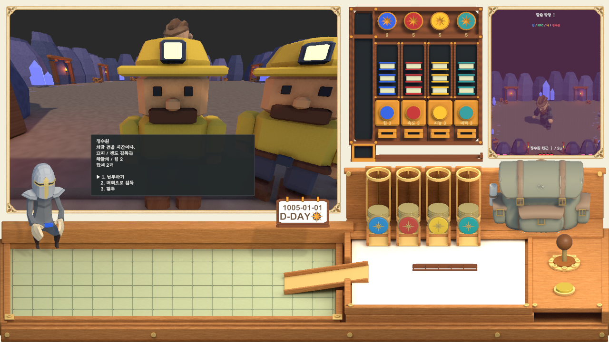
초록 보드에서 가져온 책을 읽는 캐릭터와 징수 조우 화면입니다.
2026-11-13 징수대 접근과 자판기 책장
상태
항목
변경과 확인
O
징수대
갱도 시작 경계를 4유닛 지나서 복귀합니다. 격리 회차에서 Z=0인 입구 기준 Z=-4에서 방향을 바꾸는 것을 확인했습니다. 실제 조우는 기존 수평 거리 조건으로 판정합니다.
O
동전 투입
아래 코인통에서 꺼낸 동전은 중력으로 받침에 떨어집니다. 자판기 위쪽의 해당 능력 투입구에 놓으면 화면 쪽에서 투입합니다. 빈 칸에 요구 수량을 모으면 차감과 리필을 적용합니다. 시험에서 1코인 차감과 재고 회복을 확인했습니다.
O
책 재고와 전달
책 생성 요청 시 재고 숫자와 모형이 함께 감소합니다. 보드에 놓은 책은 동전과 같은 낙하 처리를 사용합니다. 캐릭터에게 건네면 기존 일어서기와 걷기를 재사용해 책을 받으러 가고, 손에 들고 자리로 돌아온 뒤 학습합니다.
O
책장 콤보
LearningDispenserKit_v2의 LowerBookcase 다섯 칸을 흰 보드에 배치했습니다. 등록된 조합을 모아 ‘함께 읽기’를 눌러 제출합니다. 동시 학습 자리와 남은 하루 한도가 모두 충분해야 하며, 같은 제출에서 성공한 책만 콤보에 반영합니다. 개별 학습으로 콤보가 발동하지 않는 것을 검증했습니다.
O
학습 안내
결과창을 머리 쪽으로 내리고, 콤보 이름의 가운뎃점과 곱셈 기호는 화면에서 슬래시로 표시합니다.
Inspector에서 MineTaxCollectors → Entrance Overshoot와 LearningDispenser → Learning Dispenser View → Notice Above Head / Combo Shelf Prefab을 조절할 수 있습니다. 콤보 조합과 리필 수치는 기존 Study.xlsx를 사용합니다.
Unity에서 재고 모형 3→2, 동전 투입 리필, 개별 독서와 책장 제출의 보상 차이, 일어서기·걷기·책 들고 착석 복귀를 확인했습니다. 최종 컴파일 오류와 경고는 각각 0개였습니다. 임시 검증 스크립트 tmp/DispenserShelfReview.cs는 결과 확인 후 정리 대기 중입니다.
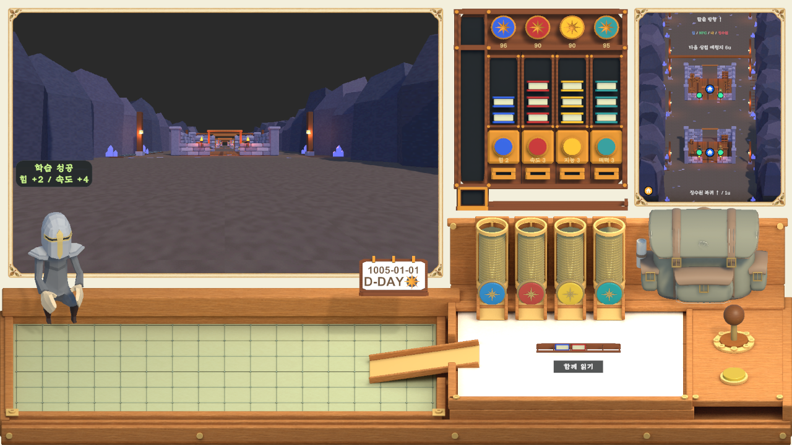
격리 회차에서 책장 배치와 학습 안내를 확인한 화면입니다.
2026-11-13 학습 안내와 투입구 라벨
상태
항목
변경과 확인
O
글리프 경고
실행 중인 Unity의 Editor.log에서 ChosunCentennial 폰트가 StudentStudyResult의 가운뎃점(U+00B7)을 네모(U+25A1)로 바꾼 것을 확인했습니다. 학습 보상, 콤보, 리필 등 관련 문구의 구분 기호를 슬래시로 바꿨습니다.
O
머리 위 안내
성공·실패·한도 안내에 같은 짙은 반투명 배경을 적용합니다. 한도 문구는 ‘오늘의 학습량 소진!’이며 앉은 캐릭터의 머리 중앙에 맞춥니다. 배경 크기는 문구 길이에 맞춥니다.
O
투입구 라벨
힘, 속도, 지능, 매력 이름을 재고 숫자와 함께 표시합니다.
격리 Unity 회차에서 한도 안내와 투입구 네 라벨을 확인했습니다. 컴파일 오류와 경고는 각각 0개였으며 확인한 구간의 로그에는 같은 글리프 경고가 없었습니다.
표시 위치의 기준은 DecisionScene → LearningDispenser → Learning Dispenser View → Student Head입니다. 배경·여백과 라벨 표시 형식은 LearningDispenserView.cs에서 관리합니다. 격리 검증에 사용한 tmp/StudyNoticeReview.cs는 정리 대기 중입니다.
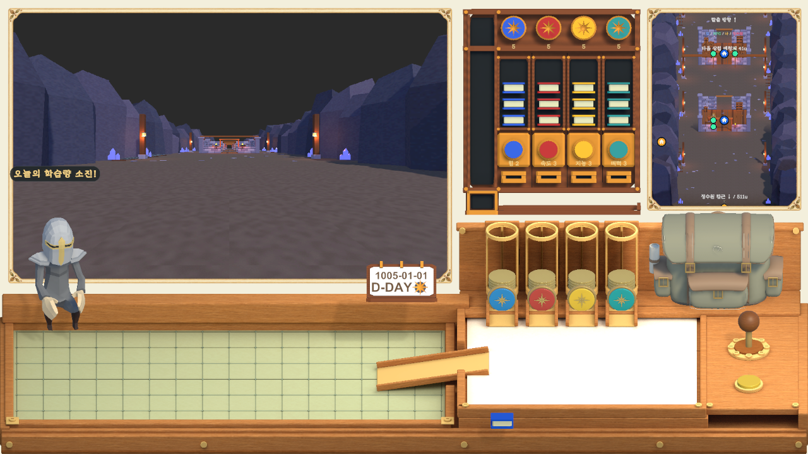
앉은 캐릭터와 자판기 라벨을 확인한 Unity 화면입니다.
2026-11-13 징수대 복귀와 앞뒤 4청크 로드
상태
항목
동작
O
징수대 복귀
하강 경로 끝에서 방향을 바꿔 출발점까지 걸어가 대기합니다. 복귀 중 문은 한 줄로 통과하고, 징수나 NPC 정차는 하강 중에만 발생합니다. 미니맵의 빨간 마크는 실제 모델을 따라갑니다.
O
청크 로드
현재 청크와 앞뒤 각각 4개를 유지합니다. 등록된 지형이 충분하면 시작점에서 5개, 중간에서 최대 9개입니다. 에피소드 경계에 도달하면 실제 등록된 청크 수만큼 로드합니다.
수정 위치.DecisionScene → Environment → Env Controller → Load Radius에서 한쪽 청크 수를 조절합니다. 복귀 속도는 DecisionScene → MineTaxCollectors → Mine Collector Procession → March Speed를 사용합니다.
임시 검증 스크립트 tmp/CollectorReturnReview.cs는 결과 확인 후 정리 대기 중입니다.
Unity 검증. 징수원 3명이 갱도 입구 Z=0에서 사라지지 않고 방향을 바꿔 출발점 Z=540까지 걸어간 뒤 대기했습니다. 복귀 상태의 저장 직렬화와 복귀 중 징수 제외 조건을 확인했습니다. 12청크 검증 지형에서는 첫 청크 5개, 중간 9개, 마지막 5개가 활성화되었습니다. 실제 갱도 시작 회차에서는 등록된 갱도 3개와 보스 청크 1개가 로드되었습니다.
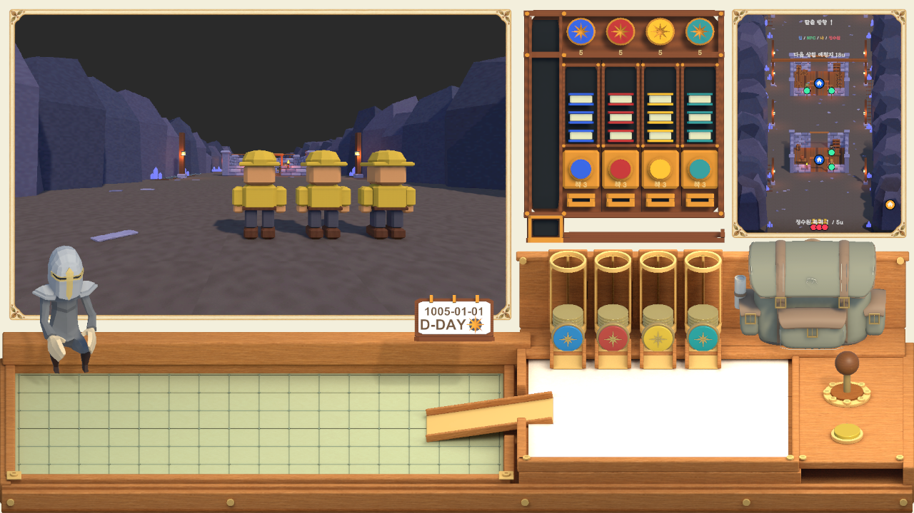
갱도 입구에서 방향을 바꾼 징수대가 걸어서 돌아가는 화면입니다.
2026-11-13 청크 끝 출발과 이동 중 조우
상태
항목
동작
O
청크 끝 출발
출발 시 로드된 마지막 청크의 끝을 경로에 저장합니다. 징수대는 그곳에서 플레이어가 있는 아래 방향으로 이동합니다. 기존 왕복 순찰을 편도 경로로 바꿨으며, 문 대형·NPC 정차·밤 정지는 적용합니다.
O
지도 마크
실제 징수원별 월드 좌표를 지도 카메라로 투영합니다. 지도 범위 밖에서는 마크를 숨기고, 안으로 들어오면 실제 위치에 표시합니다. 분홍 구름도 같은 방향으로 내려옵니다.
O
능력치 판정
조우 시 고지서가 요구하는 능력별 코인 수를 모두 초과하면 차감 없이 통과합니다. 같거나 낮으면 징수 대화를 엽니다. 자유세·인두세는 지불에 사용하는 각 종류에서 요구량보다 한 개씩 더 가진 조합이 있는지 확인합니다.
수정 위치. 조우 거리는 챕터 Rules.json → encounterDistance, 능력별 고지액은 TaxCatalog.xlsx, 이동 설정은 DecisionScene → MineTaxCollectors → Mine Collector Procession에서 수정합니다.
임시 검증 스크립트 tmp/CollectorDescentReview.cs는 결과 확인 후 정리 대기 중입니다.
Unity 검증. 메인 메뉴에서 별도 저장으로 실행했습니다. 실제로 로드된 마지막 청크 끝 Z=360에서 출발해 Z=334.65까지 하강했습니다. 지도 바깥에서 마크가 숨겨지고, 지도 카메라가 이동해도 마크가 징수원의 투영 좌표와 일치하는 것을 확인했습니다. 시험 고지액 힘 2·지능 1에서 힘 3·지능 2는 차감 없이 통과했고, 힘 2·지능 2는 징수 대화가 열렸습니다. 고정액·자유세·인두세를 합친 판정과 기준 미달도 검사했습니다.
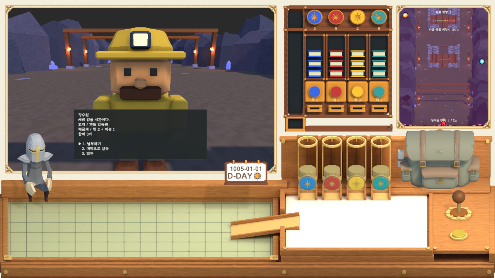
첫 순찰 하강 중 힘이 요구량과 같아 징수 대화가 열린 격리 검증 화면입니다.
2026-11-13 첫 징수 조우와 분홍 구름
상태
항목
동작
O
첫 징수
첫 집결에 도착하면 고지서를 발행합니다. 이후 징수일은 세금 주기를 따릅니다.
O
플레이어 조우
기존 조우 반경 2유닛을 수평으로 판정합니다. 거리 안에 들면 징수원이 멈추고 징수 대사를 엽니다. 기존 보드 결제나 결투로 즉시 화면을 전환할 수 없으면 징수대가 기다립니다.
수정 위치. 조우 거리는 챕터 Rules.json의 encounterDistance에서 조절합니다. 집결 대기는 DecisionScene → MineTaxCollectors → Mine Collector Procession → Row Wait Seconds에서 조절합니다.
검증 보조 코드.tmp/CollectorContactReview.cs는 격리 검증용이며 결과 확인 후 정리 대기 중입니다.
Unity 검증. 메인 메뉴에서 별도 저장으로 두 번 실행했습니다. 첫 집결 뒤 고지서가 생기고 다음 징수일은 2일 뒤로 유지되는 것을 확인했습니다. 브룩 대화 중 징수 선택지로 전환되었으며, 납부 확정 로직으로 각 회차의 고지액인 6개와 9개를 차감한 뒤 대화가 복원되고 징수원이 전진했습니다. 구름은 접근과 집결 대기 내내 숨겨졌고, 전진을 시작할 때부터 미니맵 하단에서 상승했습니다.
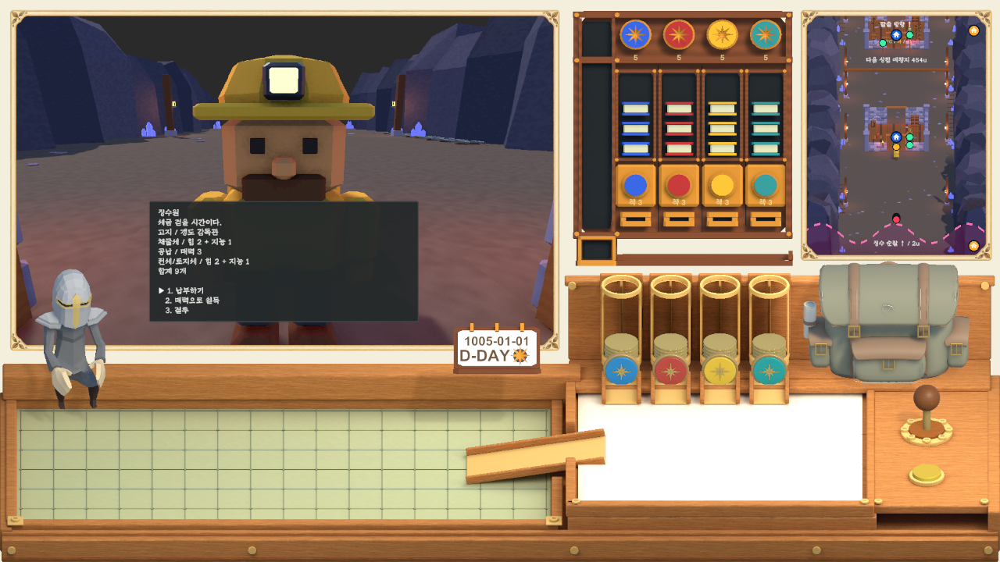
첫 징수 순찰에서 플레이어와 마주친 화면입니다.
2026-11-13 실제 징수대 왕복과 조우
갱도 시작 순찰을 월드에서 실행하고, 미니맵의 표식과 물결을 징수원 좌표에 연결했습니다. 이후 첫 집결 후 징수와 구름 등장 시점을 수정했습니다.
상태
항목
동작과 검증
O
출발과 방향 전환
청크 끝에서 3~5명이 가로로 출발합니다. 문 앞에서 세로로 바꿔 4→3→2→1번 장소를 거칩니다. 하단 집결선 도착 후 3초 대기하고 1→2→3→4번으로 돌아갑니다. 격리 회차에서 3명, 첫 집결 24.98초, 양방향 네 문 통과를 확인했습니다.
O
낮·밤과 지도
해질녘 감속, 밤 정지, 새벽 재개를 하루 주기로 제어합니다. 프레임이 흐르는 격리 회차에서 밤에 좌표가 고정되고 새벽에 다시 이동함을 확인했습니다. 미니맵 물결과 표식은 실제 대열의 Z좌표를 사용합니다.
O
NPC·플레이어 조우
순찰 중 NPC마다 2~4초 정차합니다. NPC 8명 정차와 근처 플레이어에게 보이는 NPC 대사 두 줄, 징수일 플레이어 고지서, 징수 종료 후 전진, 경로 끝 퇴장을 확인했습니다. 이동 검증에서는 징수 종료 처리를 호출해 복귀를 확인했습니다.
X
후속 연출
걷기·잠들기·기상 애니메이션과 밤 대형은 에셋 지정 후 연결합니다. 퇴장 5초 뒤 별도로 재등장하는 시험은 미적용이며, 현재 재출발은 징수일을 따릅니다.
수정 위치.DecisionScene → MineTaxCollectors → Mine Collector Procession의 Row Wait Seconds 3초, March Speed 3유닛/초, Spacing 1.2유닛을 조절합니다. 복귀 순찰 속도는 기존 0.25에서 3으로 시험 조정했습니다. 출발 시간과 NPC 정차 범위는 챕터 Rules.json의 collectorArrivalSeconds, collectorNpcWaitMin, collectorNpcWaitMax에서 지정합니다. 실제로 배치된 건물의 입출구를 우선 사용하고 배치 정보가 없으면 Inspector의 Stops를 사용합니다.
검증 보조 코드.tmp/CollectorRouteReview.cs는 격리 회차에서 경로·조우를 검증하는 임시 스크립트입니다. 결과 확인 후 정리 대기 중입니다.
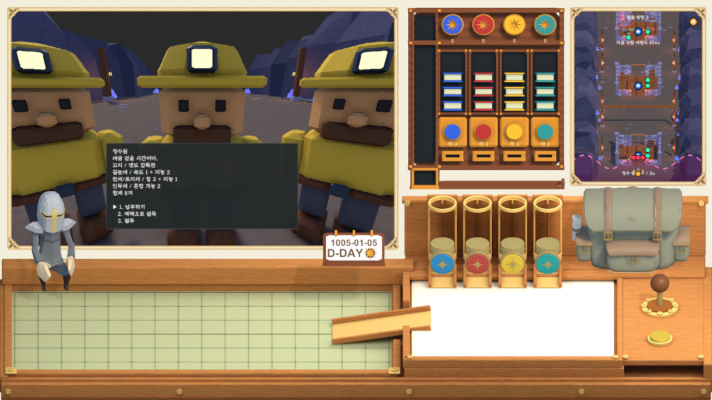
징수일에 플레이어와 만난 실제 징수대입니다.
2026-11-13 책 전달·기어·코인통·징수대 정찰
항목
변경
카메라
Road_View_Camera의 씬과 초기화 높이를 Y=22로 설정했습니다.
책
호버 제목을 밝은 배경의 검은 글씨로 표시합니다. 책을 앉은 캐릭터 위에 놓으면 손에 들어가고, 읽기 조건과 오늘 한도를 충족하면 학습합니다. 학습량 소진은 머리 위에 표시됩니다.
기어
마우스를 누른 채 이동한 거리만큼 선택지가 연속 이동하며, 같은 드래그에서 방향을 바꿀 수 있습니다.
코인통
평상시에도 코인을 꺼내 두 보드 사이에서 옮길 수 있습니다. 미리 꺼낸 코인은 잔액에서 빠지지 않으며, 이후 납부 요구와 맞는 코인을 사용할 수 있습니다.
검증 O. 메인 메뉴에서 별도 저장으로 Unity Play Mode를 실행했습니다. 컴파일 오류와 경고는 각각 0개였습니다. 카메라 Y=22, 한 번의 드래그에서 선택 순서 0→1→2→1, 납부 대화 밖 코인 1개 배출과 잔액 5 유지, 책 제목 검은 글씨, 캐릭터에게 책을 건넨 뒤 학습 시작, 머리 위 학습량 안내, 상단 요구사항 패널, 미니맵 정찰 하강과 상승을 확인했습니다.
Inspector에서 조절.DecisionScene → _World → Road_View_Camera의 Transform → Position Y와 Road View Camera Controller → Initial Camera Position Y를 함께 수정합니다. 기어 감도는 Journey Board Input → Choice Step Pixels의 14px을 조절합니다.
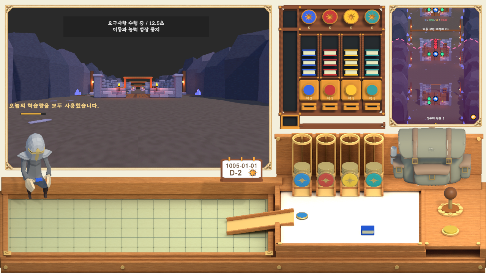
격리 회차에서 요구사항 패널과 학습량 안내를 동시에 확인한 화면입니다.
2026-11-13 보드 납부·학습 결과·갱도 장식
수정
동작
학습 결과
캐릭터 머리 위에 성공 또는 실패와 능력 변화가 표시됩니다. 성공 보상에는 해당 책과 콤보의 코인 보상이 포함됩니다. 상태창은 아래로 옮겼습니다.
갱도 장식
180유닛 갱도의 기존 건물 장식은 건물과 함께 이동합니다. 건물이 비워진 자리의 장식은 숨깁니다. 건물에 속하지 않은 통로 장식은 원래 위치에 배치됩니다.
코인 납부
대화에서 납부를 선택하고 코인통 버튼을 눌러 흰 보드로 배출합니다. 요구 종류와 수량을 초록 보드에 올리면 코인이 이야기 화면으로 날아가며 줄어듭니다. 연출 뒤 코인 오브젝트를 제거하고 납부를 한 번 적용합니다. Esc로 준비를 취소할 수 있습니다.
징수대
미니맵 표식과 물결을 청크의 순찰 진행률에 맞췄습니다. 위에서 출발해 아래까지 내려온 다음 징수를 시작하며, 돌아갈 때 함께 위로 올라갑니다.
격리 회차에서 학습 실패의 힘 +0과 성공의 힘 +2·지구력 +1, 실제 코인통과 보드 위치, 2개 중 첫 코인에서는 대기하고 마지막 코인에서만 완료되는 동작을 확인했습니다. 흡수 연출 뒤 코인 오브젝트는 0개였고, 납부 콜백은 한 번 호출되었습니다. 갱도 장식 세 묶음의 Z 좌표가 각 건물과 일치했고, 징수대와 물결의 하강·상승을 확인했습니다. 통행료와 세금 각각의 전체 대사 분기는 수동으로 재생하지 않았습니다.
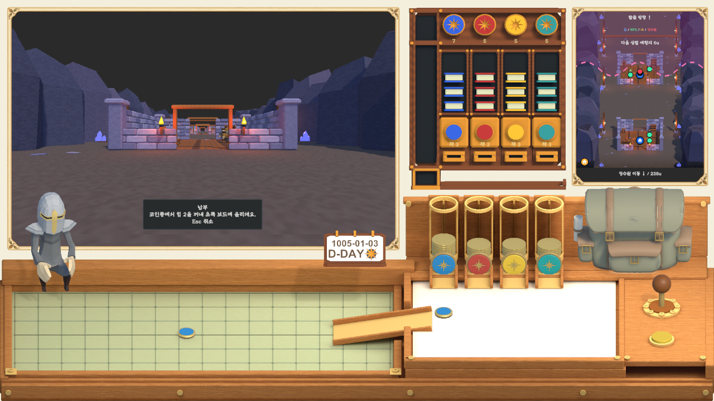
2개를 납부하는 격리 시험. 코인 하나를 초록 보드로 옮긴 상태입니다.
임시 스크립트 tmp/BoardPaymentReview.cs와 격리 저장 output/MineChapterReview/MenuSave-20261113-004200, MenuSave-20261113-004412는 결과 확인 후 정리합니다.
2026-11-13 학습 상태창과 징수원 미니맵
수정
동작
학습 상태창
앉아 있는 캐릭터에 마우스를 올리면 힘·속도·지능·매력 코인, 회차 누적 성공 수, 오늘 남은 학습량/일일 한도, 대기 수/대기 한도가 나옵니다. 보드 아래는 학습 결과와 리필 알림을 잠시 표시합니다.
성공 기록
성공할 때마다 회차 누적 횟수를 저장합니다. 기존 회차는 저장된 성공 도서 종류 수로 시작합니다. 이전 반복 성공의 횟수는 기존 저장에서 복원할 수 없습니다.
징수원 미니맵
징수일에 징수대가 출발하면 빨간 표식이 나타납니다. 지도 밖에 있으면 가장자리에 표시하고, 지도 범위에 들어오면 실제 위치를 따라 움직입니다. 하강을 마치고 대형을 잡으면 징수 단계가 열리며, 물결이 징수대 위치를 따라 위로 올라갑니다.
격리 회차에서 Unity 컴파일 오류 0개를 확인했습니다. 마우스를 올리고 벗어날 때 상태창이 열리고 닫혔습니다. 징수원 5명의 표식이 지도 밖 출발점에서 상단에 나타났고, 하강 중에는 징수 상호작용이 잠겨 있었습니다. 하강 뒤 징수가 열리고 물결이 다시 상승하는 것을 실제 경로로 확인했습니다.
학습 상태창과 하강 중인 징수대. 화면의 성공 수는 표시를 확인하기 위한 테스트 값입니다.
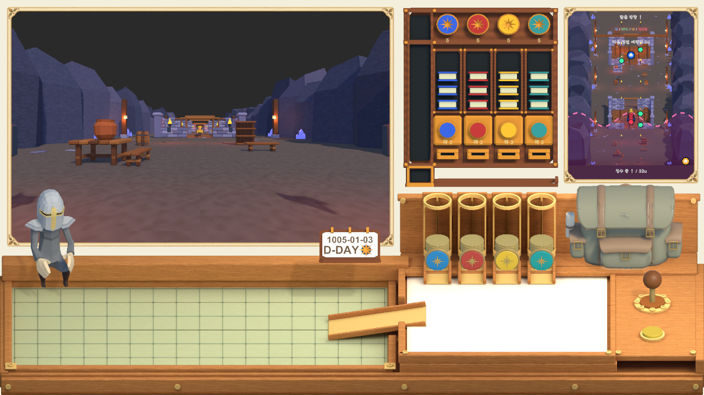
징수 단계에서 위로 이동하는 징수대와 물결입니다.
임시 검증 스크립트 tmp/StudyMapReview.cs와 격리 저장 output/MineChapterReview/MenuSave-20261113-001935, MenuSave-20261113-002208은 결과 확인 후 정리합니다.
2026-11-12~13 책 자판기·학습·가방 저장
단계
상태
동작
책 생산과 리필
적용
하단 색상 버튼으로 재고에서 책을 뽑습니다. 왼쪽 위 생성 칸에 책이 나타나고, 완료된 책은 아래 대기열을 거쳐 배출됩니다. 재고가 0이면 상단 능력 코인 버튼을 눌러 3권을 채웁니다. 같은 날 같은 분야의 리필은 1, 2, 3코인 순으로 증가합니다.
드래그와 읽기
적용
책에 마우스를 올려 제목을 확인합니다. 배출된 책을 흰 종이 보드 또는 초록 보드에 놓으면 읽기 조건과 일일 한도를 확인한 뒤 캐릭터가 책을 들고 읽습니다. 머리 위 게이지는 남은 시간에 맞춰 줄어듭니다.
판정·보상·콤보
적용
책마다 지능과 해당 분야의 읽기 조건이 있습니다. 학습 성공 확률은 지능에 따라 58–97%입니다. 성공하면 능력 코인과 세부 능력을 받고, 작가 선집이나 분야 페어를 성공으로 채우면 회차당 한 번 여러 분야의 코인과 추가 세부 능력을 받습니다. 실패도 하루 학습량에 포함됩니다.
지능과 지구력
적용
지능 1·2·3·5·8·13·20에서 보드와 대기열 용량이 달라집니다. 지능 1–3, 5–8, 13–20 단계의 능력 유지 기간은 각각 7·11·20일입니다. 성공한 분야의 유지 기간은 다시 시작되며, 시간 감소에서 마지막 체력 코인 1개를 보존합니다. 하루 학습량은 배운 지구력과 체력 코인 5개당 지구력 1을 합쳐 산정합니다.
저장과 가방
적용
보드 책을 가방에 드롭하면 남은 시간을 유지한 채 보관합니다. 가방을 열어 제목이 적힌 슬롯을 보드로 드래그하면 계속 읽습니다. 보드 위치, 생산과 대기열, 재고, 리필 횟수, 학습 한도, 콤보, 세부 능력이 회차 저장에 들어갑니다.
다른 게임 시스템의 세부 능력 효과
후속
지구력은 일일 학습량에 반영됩니다. 타격력·이동력 등 나머지 세부 능력의 수치도 보상으로 저장하며, 전투와 이동 등에 적용하는 효과는 별도 연결이 필요합니다.
엑셀에서 책 20권, 세부 능력 14종, 콤보 7종, 생산 1.4–3.2초, 학습 6–16초와 보상 수치를 편집할 수 있습니다. 게임이 첫 실행 시 Saves/ContentAuthoring/Study.xlsx를 만듭니다. 플레이에 반영하려면 그 파일의 Data 시트에서 Value를 바꾸고 게임을 다시 시작합니다. 엑셀 원본
Unity에서 엑셀의 책 20권을 읽고 생성, 대기열, 제목 표시, 흰 보드 드래그와 게이지 감소를 확인했습니다. 가방에 넣은 책의 남은 시간을 저장 파일에서 확인하고, 같은 회차를 다시 열어 초록 보드의 《노인과 바다》, 가방의 《80일간의 세계 일주》, 생성 중인 《오만과 편견》이 함께 복원되는 것을 확인했습니다.
Unity 컴파일 오류는 0개였습니다. 규칙 검사에서 리필 비용 1→2와 날짜 변경 초기화, 지능별 동시 학습 수, 학습 성공과 실패, 일일 한도, 지구력 보상, 체력·이동 페어의 복수 코인 보상과 7·11·20일 유지 기간을 확인했습니다.
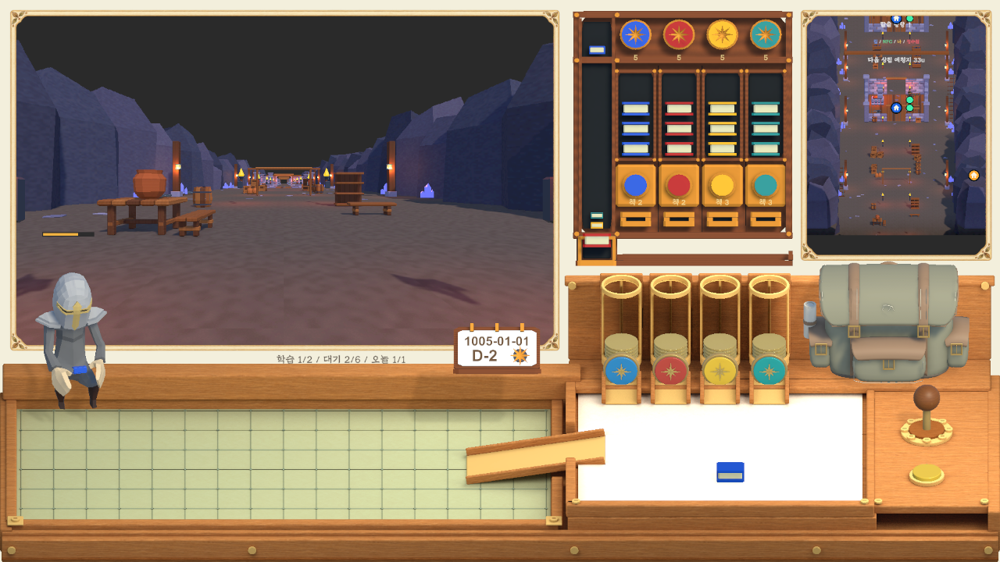
읽는 중인 기사, 흰 보드의 책, 왼쪽 자판기의 생성 칸과 대기열입니다.
재시작 검사 초기에 Unity가 일반 저장을 한 번 열었고 해당 회차의 플레이 시간이 잠시 진행됐을 수 있습니다. 학습 조작과 보상 검사는 격리 저장에서 실행했습니다.
임시 엑셀 생성기 tmp/build-study.mjs, 검증 스크립트 tmp/StudyReview.cs, 엑셀 검사 결과 tmp/study-workbook-inspect.ndjson, 격리 저장 output/MineChapterReview/MenuSave-20261112-235102는 결과 확인 후 정리합니다.
2026-11-09 청크별 건물 간격·장소 상한·갱도 바닥
항목
상태
내용
실제 건물 간격
O
일반 청크마다 기존 에셋의 건물 앞뒤 길이를 읽어 앞쪽 빈 길과 건물 사이 여유 공간을 계산합니다. 회차 시드와 청크 번호로 간격을 바꾸며, 현재 갱도와 해안은 최소 15유닛을 사용합니다. 같은 회차 시드와 설정으로 배치를 재현합니다.
장소 수와 첫 상점
O
이야기·일반·특화 장소 예약을 합쳐 청크당 최대 4곳입니다. 첫 청크는 상점 예정지와 브룩·모아·틸로 구성하고, 네아·시아는 두 번째 청크에 배치합니다. 보스 직전 상점 예정지도 유지합니다.
특화 장소
O
갱도 시험용 청크 3개를 유지합니다. 공통 시설 배치 후 빈 자리에 시드로 고른 특화 장소가 들어오며, 같은 특화 장소는 챕터에서 최대 한 번 배치합니다. 미선택 항목은 다음 회차의 후보에 남습니다.
NPC·입출구·지도
O
갱도 이야기 건물과 입출구, NPC 후보, 미니맵 좌표가 함께 이동합니다. 징수원은 옮겨진 네아·시아 입출구까지 경로에 포함합니다. 해안에서는 지붕이 해당 건물을 따라갑니다.
갱도 판자 바닥
O
기존 판자 윗면은 Y=-0.01, 청크 흙 표면은 Y=0이었습니다. 갱도 건물 프리팹 네 개의 Floor_Planks를 로컬 Y=0.03으로 옮겼습니다. 같은 오브젝트 아래에 있는 판자 메시와 콜라이더가 함께 올라갑니다.
상점 거래 및 특화 장소 콘텐츠
X
상점 거래·품목·재고와 아직 에셋이 없는 특화 장소의 오브젝트·상호작용은 추가 자료 연결이 필요합니다. 재사용한 통로 건물은 배경이며, 지도에 표시되는 예약 시설은 별도 장소 데이터로 관리합니다.
다음 챕터는 DecisionScene → EnvController → Ground Entries에서 Room Group, 필요하면 Room Companion Group 및 Room Source Ground Id를 연결합니다. 상세 절차는 사용 안내에 있습니다. 기존 갱도 진행 저장은 좌표 호환을 위해 원래 배치를 사용합니다. 새 배치는 새 회차에서 확인할 수 있습니다.
메인 메뉴에서 시작한 격리 회차로 갱도 세 청크와 해안 청크를 불러왔습니다. 네아·시아의 건물과 NPC가 두 번째 청크에 배치되었고 징수원 문 좌표도 일치했습니다. 마지막 시험에서 갱도 장소 예약은 4·4·4곳, 특화 장소는 광부 모닥불과 환풍기 작업장 각 한 곳이었습니다. 시드 32개에서 재현성, 청크당 상한, 첫·보스 직전 상점과 특화 장소 중복 방지를 검사했습니다. 보스전까지의 전체 수동 플레이는 이번 검증에 포함되지 않았습니다.
캡처 회차의 건물 사이 실제 빈 거리는 갱도 1청크 34.9·67.1, 2청크 19.0·24.2·20.0, 3청크 24.9·40.7, 해안 17.2·26.0유닛이었습니다. 해당 회차의 갱도 건물 10동에서 판자 윗면 Y=0.02를 확인했고, 위에서 아래로 검사했을 때 청크 흙보다 판자 콜라이더가 먼저 감지됐습니다.
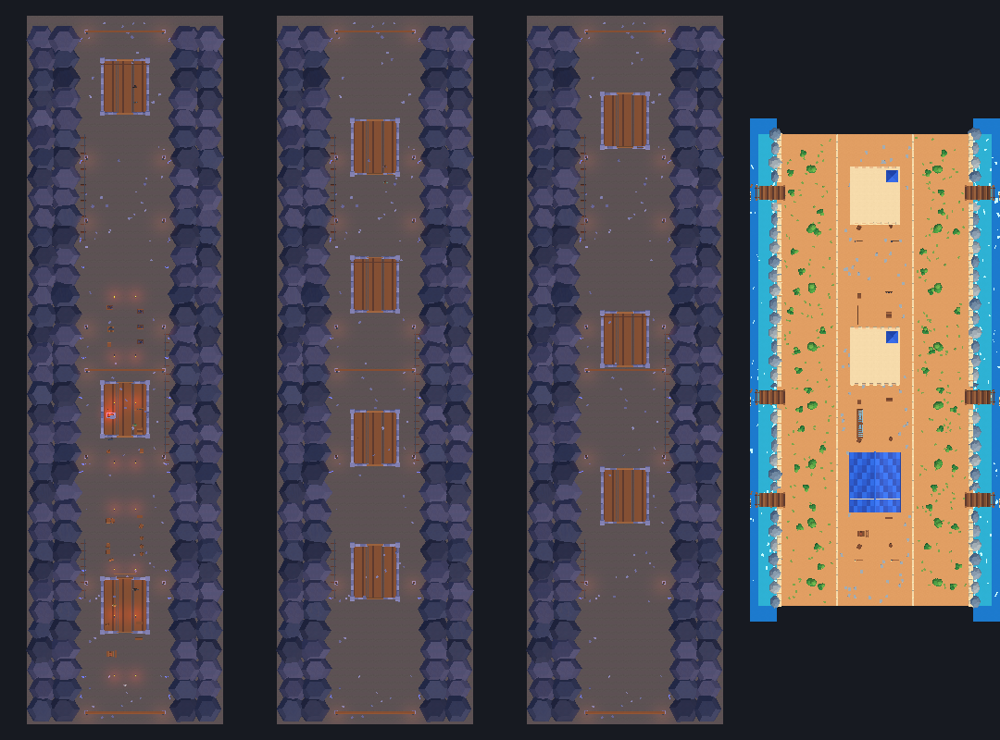
왼쪽부터 갱도 1·2·3청크와 해안. 갈색 판자 바닥과 청크마다 다른 건물 간격을 확인할 수 있습니다.
임시 검증 스크립트 tmp/ChunkRoomLayoutReview.cs와 격리 저장 폴더 output/MineChapterReview/MenuSave-20261108-231929, MenuSave-20261108-232533, MenuSave-20261109-023751, MenuSave-20261109-023953는 결과 확인 후 정리합니다.
2026-11-08 상점 지도·징수 조우·선택지 탐색
항목
상태
내용
상점 위치와 지도
O
첫 청크의 상점을 다른 신규 시설 후보보다 앞에 예약하고, 보스 직전 예약을 유지합니다. 미니맵은 상점을 금색, 주요 시설 후보를 청록색으로 구분하며 전방의 가장 가까운 상점까지 Z축 거리를 표시합니다. 다음 상점이 지도 범위 밖에 있으면 아이콘을 가장자리에 표시합니다. 지도 좌표는 회차의 실제 예약 결과입니다.
상점 거래·특화 시설 조건
X
합의한 범위는 위치·지도·거리입니다. 건물 상점, 수레, 광부 교환대별 에셋·품목·재고·가격과 새 특화 장소의 요구사항은 콘텐츠를 지정한 뒤 연결합니다. 첫 소비·보상과 실제 교환상 조우도 거래 연결 시 적용합니다.
보스 진입과 기존 조작
기존 확인
180유닛 청크 3개 뒤 보스 청크와 3D 전투로 이어지는 기존 코드를 확인했습니다. 글자 15, 반투명 검회색 패널, 상하 기어 한 칸 이동과 마우스 버튼을 놓았을 때 중앙 복귀를 사용합니다.
노동 중 징수
O
노동 중 징수원이 조우 범위에 들어오면 기존 징수 대화로 전환합니다. 순찰이 활성화된 노동 화면에 징수원 거리를 표시하며, 징수 대화 중에는 노동 시간을 멈추고 종료 후 노동 상태로 복귀합니다.
겹침과 카메라
O
대화할 때 NPC와 겹치거나 목격 장면의 시선을 막는 징수원을 작은 원형 후보 위치에서 분리합니다. 대화 후에는 원래 순찰 위치로 복귀합니다. 플레이어 방향을 바꾸기 전 카메라 회전을 보존하고 기존 보간으로 다음 화자를 향합니다. 공간이 부족해 안전한 후보를 찾지 못하면 기존 위치를 사용합니다.
선택지 탐색
O
한 화면에 최대 네 항목을 표시하고 기어로 순서대로 이동합니다. 앞이나 뒤에 더 있으면 목록 오른쪽에 ↑·↓를 표시합니다. 원래 번호와 확정 입력은 유지합니다.
수정 위치는 JourneyMapMarkers의 미니맵 표시, MineCollectorProcession → Dialogue Clearance의 최소 대화 거리, FloatingDialogueView의 선택지 패널입니다. 상점 간격과 후보 좌표 규칙은 기존 Places.xlsx를 사용합니다.
최종 Unity 컴파일 오류 0개. 메인 메뉴에서 격리 회차를 시작해 첫 상점과 보스 직전 상점 예약, 지도 아이콘과 거리 2u를 확인했습니다. 여섯 항목을 표시하는 시험에서 첫 항목, 다섯 번째, 마지막 항목을 차례로 선택해 오른쪽에 ↓, ↑↓, ↑가 각각 나타나는 것을 확인했습니다.
노동 중 징수원을 브룩과 겹치는 위치에서 시작시켜 징수 대화로 전환되는지 확인했습니다. 징수원은 1.50유닛 떨어진 후보로 이동했고, 대화가 표시되는 동안 노동 타이머가 60초에 머물렀습니다. 대화 종료 후 원래 순찰 위치와 노동 상태로 복귀했습니다. 이번 검증은 배치를 재현한 Play Mode 시험으로, 보스전까지 수동으로 다시 플레이하는 검증은 남아 있습니다.
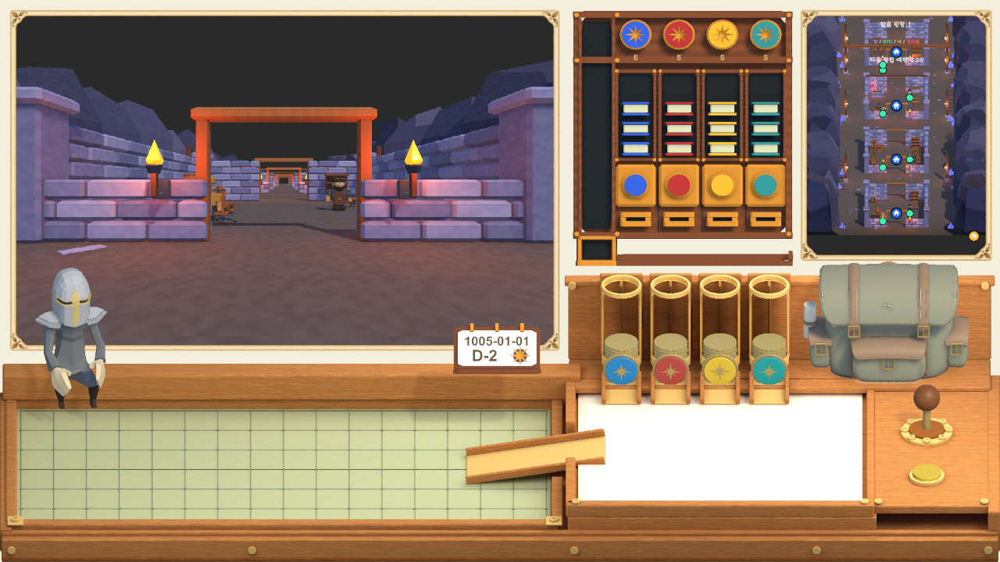
미니맵의 금색 상점 아이콘과 다음 상점 예정지 2u 표시입니다.
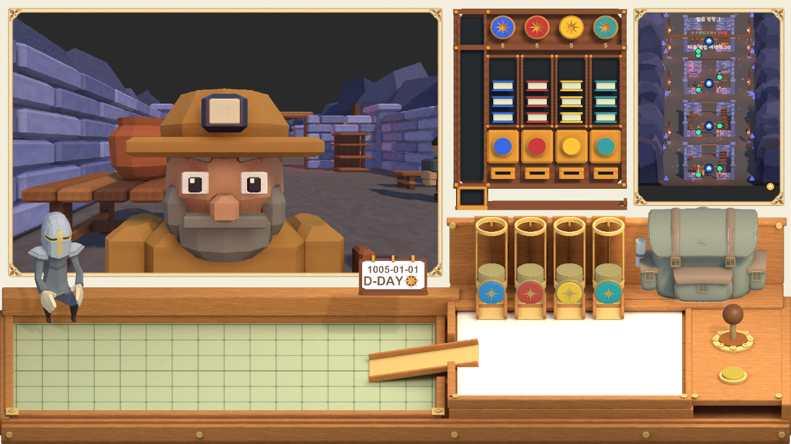
노동 도중 징수원으로 카메라를 전환한 모습입니다. 두 캡처에는 하단 대화 패널이 표시되지 않아 선택지 화살표와 징수 문구는 Play Mode UI 상태를 직접 읽어 확인했습니다.
임시 검증 스크립트 tmp/ShopEncounterReview.cs와 격리 저장 폴더 output/MineChapterReview/MenuSave-20261108-225219, MenuSave-20261108-225609, MenuSave-20261108-225825, MenuSave-20261108-230304, MenuSave-20261108-230524는 결과 확인 후 정리합니다.
2026-11-08 갱도 장소 배치와 챕터 공통 규칙
항목
O/X
적용 범위
기존 50×180 청크와 첫 조우
O
이미 적용된 50×180 청크 세 개를 사용합니다. 첫 청크의 브룩·모아·틸·네아/시아 조우와 기존 좌표 및 순서는 그대로 사용합니다.
공통 시설 주기
O
상점·교환상 1~3청크와 첫·보스 직전 청크, 금고·은행 첫 2~3청크 및 재등장 3~5청크, 숙소·휴식처 1~2청크, 일거리 중개인 1~3청크입니다. 다음 간격은 직전 등장 청크를 기준으로 고릅니다. 금고의 첫 위치는 지형 등록 시 출력되는 배치 예고에서 확인합니다.
특화 장소
O
갱목 보수소, 환풍기 작업장, 등불지기, 광석 감정소, 폐갱 길잡이, 광부 공동식당, 갱도 진료소, 막장 패거리, 밀수 장터, 구조대 대기소, 광부 모닥불, 폐광의 작은 제단을 챕터당 각각 한 번 예약합니다. 이미지의 특화 재등장 주기 대신 본문의 챕터당 한 번 규칙을 적용했습니다.
시드·간격·후보 제한
O
회차 시드로 좌우와 Z 위치를 정합니다. 기존 NPC와 다른 예약지로부터 수평 거리 최소 15유닛을 확보합니다. 요청 범위 12~15유닛의 상한을 최소 거리로 사용하고, 충돌하는 후보는 제외합니다. 상점·금고·숙소·중개인을 먼저 잡고 남는 후보를 채웁니다. 기존 조우와 주요 선택 후보 합계는 청크당 최대 4곳, 주요 선택 후보는 최대 2곳입니다. 추가 로그 예약지는 주요 선택 후보 수에 포함하지 않습니다.
새 시설과 필수 조우 콘텐츠
X
새 좌표는 모두 로그 예약이며 상점·은행 등의 기능, 실제 중간 보스 직전 거래, 화면 안의 금고 예고, 2·3청크의 새 필수 조우는 에셋·내용 연결 후 추가합니다.
실제 편집본은 Saves/ContentAuthoring/Places.xlsx → Data입니다. facilityRules에서 유형·순위·등장 간격을, facilitySpacing에서 최소 간격을, facilityMajorLimit·facilityOptionalLimit에서 후보 상한을 편집합니다. 청크 길이와 개수는 기존 Maps.xlsx에서 관리합니다.
Unity 컴파일 오류 0. 실제 편집본과 씬의 NPC 배치 데이터를 사용해 갱도 시드 128개에서 첫·마지막 상점, 금고 첫 범위, 특화 12곳, 기존 NPC를 포함한 최소 15유닛 간격, 청크별 선택 후보 수, 시드 재현성을 확인했습니다. 18청크씩 나눈 36청크 시험을 24개 시드로 실행해 에피소드 사이 재등장 간격과 특화 장소 중복 방지를 확인했습니다.
간격 보정 전 메인 메뉴의 격리 회차에서 청크 세 개를 불러와 배치 예고와 위치 로그 21개를 확인했습니다. 최종 15유닛 값은 Unity의 실제 엑셀 로더와 배치 함수를 통해 다시 검증했습니다. 아래는 최종 시드 42의 좌표 예시입니다.
최종 배치 예시
청크
로컬 X, Z
첫 상점·교환상
1
-15, 11.5
환풍기 작업장
2
-15, 49.5
금고·은행
3
15, 158.5
보스 직전 상점·교환상
3
-15, 166.5
임시 검증 코드 tmp/FacilityPlanReview.cs와 격리 회차 MenuSave-20261108-223818는 결과 확인 후 정리 대기입니다.
2026-11-08 하루 5분과 징수 간격 14일 상한
항목
O/X
적용 값
게임 하루
O
총 300초. 낮 135초, 해 질 무렵 15초, 밤 135초, 해 뜰 무렵 15초. 이전 시간 비율을 유지합니다.
징수 일정
O
2 → 3 → 5 → 7 → 14일. 20·30·60일 제거. 보스를 4회 이상 격파한 뒤에도 간격은 14일입니다. 첫 징수까지 게임 시간 2일은 실제 진행 시간 약 10분입니다.
징수 금액
O
간격의 상한과 별도로 기존 세액 규칙을 적용합니다. 격파당 25%p씩 늘고 7회 이상에서 기본액의 275%로 제한합니다.
기존 저장
O
기존 600초 기준 경과 시간의 날짜와 시간대 비율을 300초 기준으로 변환합니다. 저장된 주기 길이를 기록해 재실행 시 반복 변환하지 않습니다. 짧아진 주기로 인해 이미 잡힌 더 가까운 징수일이 늦어지지 않습니다.
Saves/ContentAuthoring/Rules.xlsx의 dayCycle과 TaxCatalog.xlsx의 intervalDays, maximumBurdenTier에서 변경합니다. Saves 편집본과 배포용 기본 파일을 갱신했습니다. Unity의 실제 엑셀 로더에서 300초 경계, 기존 저장 변환 후 재로드, 14일 상한, 세액 7단계 상한을 검사했습니다. 메인 메뉴 Play는 이번 수치 변경에서 다시 실행하지 않았습니다. 새 임시 검사 파일은 없습니다.
2026-11-08 복수 세목, 보스별 징수 주기, EmacEArt 갱도 하늘
항목
O/X
동작
세목 등록과 고지
O
공통과 갱도 세목 14개를 TaxCatalog.xlsx에 등록했습니다. 활성 세목 9개 중 서로 다른 2~3개를 뽑습니다. 갱도 활성 세목이 있으면 적어도 1개를 포함합니다. 징수 날짜와 회차 시드로 고지서를 확정하고, 세목별 금액·발행 주체·합계를 같은 패널에 표시합니다.
세금 유형
O
인두세는 종류를 섞어 배정하고, 자유세는 한 종류로 전액을 배정합니다. 공납은 고지 시 능력 1종을 지정합니다. 능력세는 고지 시 가장 많이 보유한 능력 코인의 10개당 1개를 요구하며 1~9개면 1개, 동률이면 힘·속도·지능·매력 순을 사용합니다. 전세·토지세, 요역·부역, 군역, 길눈세, 채굴세는 표에 지정된 능력 코인을 요구합니다.
납부와 저장
O
고정 비용을 먼저 확보하고, 자유세·인두세 배정을 이어갑니다. 배정과 되돌아가기는 잔액을 바꾸지 않습니다. 전체 비용을 확인한 뒤 한 번에 차감하고 고지서 종결과 함께 저장합니다. 부족할 때 기존 설득·결투로 대응할 수 있습니다.
격파 기록과 일정
O
첫 순찰은 경과 2일 뒤에 시작합니다. 보스 ID를 회차에 중복 없이 기록하며, 현재 갱도 보스 승리와 이후 챕터 전환이 이 기록을 저장합니다. 새 단계는 다음 고지서에 적용하고 기존 고지서는 보존합니다. 순찰을 피했을 때도 미납 고지서가 다음 순찰에 이어집니다. 달력은 D-2 또는 D-DAY를 표시합니다.
회색 하늘
O
EmacEArt 재질에서 해의 원반 색이 하늘색과 함께 변하게 하고 광륜을 끕니다. 이전에는 원반의 검은색이 하늘에 합성됐습니다. Rules.xlsx의 낮 0.34·밤 0.12를 밝기 계산에 사용합니다.
미확정 조건
X
숨세·울림세의 주석 조건, 그림자세 면제, 직업세의 주력 능력, 반출세 신고 기준이 확정될 때까지 징수 추첨에서 제외합니다. 추가 중간·챕터·최종 보스 콘텐츠 및 보스 간 실제 세금 송금은 후속입니다. 현재 고지 발행 주체는 갱도 감독관입니다.
격파 수별 주기와 금액
서로 다른 보스 격파 수
0
1
2
3
4
5
6
7 이상
간격 (게임 일)
2
3
5
7
14
20
30
60
기본 금액 대비
100%
125%
150%
175%
200%
225%
250%
275%
세목별 합계를 올림(기본 합계 × (1 + 단계 × 0.25))로 계산합니다. 고정 복수 코인은 종류별 내림값을 만든 다음, 소수점 부분이 큰 종류에 남은 개수를 배분해 세목 합계를 맞춥니다. 이미지 금액이 기본값입니다. 게임 하루는 10분입니다.
수정하는 곳
Saves/ContentAuthoring/TaxCatalog.xlsx → Data → Value에서 intervalDays, increasePerTier, minimumLevies, maximumLevies, levies를 편집하고 게임을 다시 시작합니다. 기존 Taxes.xlsx는 준비 이동·NPC 정지와 조우 거리용입니다. 옛 단일 세금 시험값은 이 고지서 계산에 쓰이지 않습니다.
DecisionScene → Decision_Manager → Chapter Skybox / Chapter Sun / Chapter Calendar에서 씬 참조를 수정합니다. 밝기와 하루 구간 길이는 Rules.xlsx → dayCycle입니다.
검증 결과와 게임 화면
Unity 컴파일 오류 0. 격리된 새 회차에서 TaxCatalog.xlsx의 세목 14개·활성 9개를 읽었습니다. 120개 시드에서 2~3개 구성, 중복 방지, 갱도 세목 포함, 1단계 증액을 검사했습니다. 공납의 한 종류 지정, 능력세 25개 보유 시 2개와 1~9개 보유 시 1개를 확인했습니다.
검증 도구로 게임 시간을 경계에 맞춰 경과 2일 전에는 순찰이 없고 2일에 첫 순찰과 고지서가 저장되는 것을 확인했습니다. 5초 시험 재등장을 제거한 뒤 경과 4일의 다음 순찰까지 미납 고지서가 유지됐습니다. 고지서와 지갑을 실제 저장 파일로 다시 읽었습니다. 자유세를 지능으로, 인두세를 힘·매력으로 나눠 배정해 확정 전 잔액 유지와 확정 후 한 번 차감을 확인했습니다. 잔액 부족과 고지서로 돌아가기에서도 차감되지 않았습니다.
중간 보스는 테스트 ID로 기록 경로를 검사했습니다. 중복 ID는 무시됐고, 격파 1회 후 다음 간격이 3일로 바뀌었습니다. 기존 갱도 보스 승리 저장 경로를 호출했을 때 갱도 보스 ID를 포함해 해안까지 저장됐습니다. 장시간 대기와 보스전 수동 완주는 미검증입니다.
갱도 전용 MineGraySky.mat의 Exposure는 2.2입니다. 원래 EmacEArt 데모 재질과 셰이더는 이 변경에서 수정하지 않았습니다. 실제 Saves의 새 엑셀만 추가했습니다.
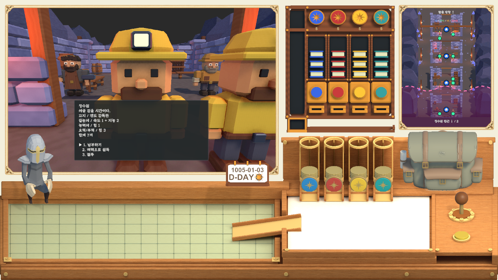
첫 징수 고지서. 길눈세·능력세·요역/부역의 합계 7개가 표시됩니다.
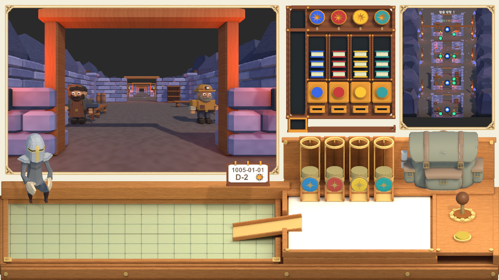
첫날. 밝은 해 원반 없이 어두운 회색 하늘과 달력의 낮 아이콘이 보입니다.
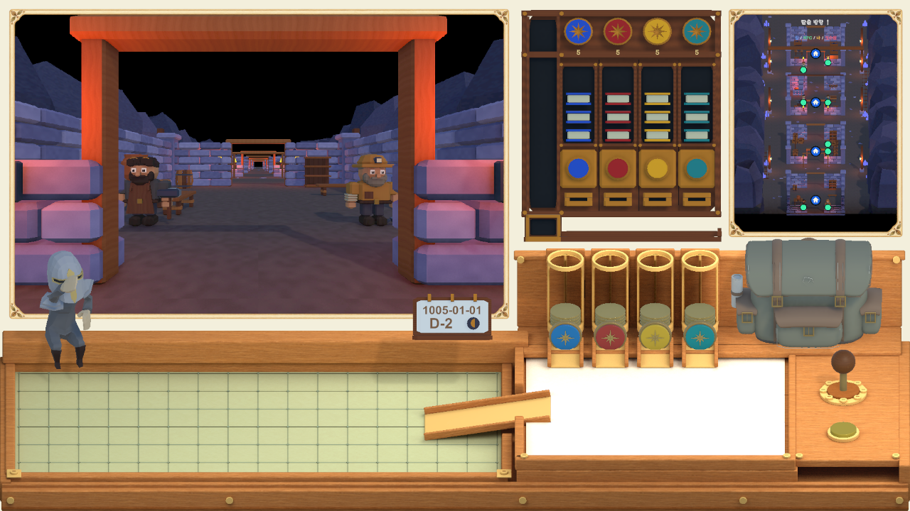
밤. 더 어두운 하늘과 달 아이콘이 보입니다.
임시 검증 도구 tmp/TaxCollectionReview.cs와 격리 저장 MenuSave-20261108-213807, MenuSave-20261108-213957, MenuSave-20261108-214533는 결과 확인 후 정리 대기입니다.
2026-11-08 갱도 180 Open, v5 달력·자판기, NPC별 징수
단계
O/X
적용 범위와 이유
갱도 패키지 정리
O
Assets/AiAsset/MineChunkModularPack180Open 아래로 원본 GUID를 보존해 옮겼습니다. 바닥·암벽·보강목·레일·등불 환경을 50×180 마을·통로 프리팹에 연결했습니다. 기존 네 장소의 건물과 NPC 앵커, 이야기 연결, 보스 청크의 진행 순서를 보존했습니다. 동봉 장소 프리팹 12개는 패키지 폴더에서 확인할 수 있습니다.
v5 자판기
O
패키지 에셋이 프로젝트에 이미 같은 바이트로 들어 있는 것을 확인했습니다. 기존 모델 연결을 유지해 1920×1080 기준 화면 폭 423·높이 490에 맞췄습니다. 본체 하단 뷰포트 Y=0.523, 기존 코인통 상단 Y=0.484. 네 코인통 입구와 버튼이 보입니다.
달력
O
파란 표시 위치에 제공된 DeskCalendar.prefab을 배치하고 갱도 시계에 연결했습니다. 시작일은 프리팹 예시의 1005-01-01을 기본값으로 사용합니다. 시간은 다음 날까지의 분·초를 표시하며 낮·밤에 해·달 아이콘이 전환됩니다.
징수원 준비 이동·낮밤
O
MineCollectorProcession이 청크 끝에서 첫 입구 바깥 준비 지점까지 거리÷25초로 이동합니다. 지점 도착 이후 기존 정렬과 대기는 별도입니다. 낮 270초, 해 질 무렵 30초에 감속, 밤 270초 정지, 해 뜰 무렵 30초에 가속을 적용했습니다.
플레이어와 NPC 징수 순서
O
플레이어와 마주치면 현재 대화 위에 징수원 대사·통행세 합계·대납 선택을 표시합니다. 납부 후 기존 대화를 복원하고 징수원은 진행 방향의 실제 NPC 위치에서 각각 2~4초 정지합니다. 플레이어가 해당 NPC 가까이에 있으면 징수원과 NPC 두 줄을 표시합니다. 같은 정지에서 중복 표시하지 않으며 멀면 시간 지연만 적용합니다.
후속 범위
X
잠드는 애니메이션과 야간 전용 대형, NPC 잔액 차감, 복수 세목·최종 징수 주기, 새 장소 12개의 거래·이야기는 미작업입니다. 다음 날까지의 달력 표시와 최종 징수 예정일은 별도입니다.
Taxes.xlsx의 준비 시간·NPC 대기 최솟값/최댓값·조우 거리, Rules.xlsx의 하루 주기. Unity의 MineCollectorProcession → Stops / Gathering Distance에서 준비 지점과 통과 경로를 바꿉니다. NPC 실제 위치는 MineNPCPlacement → Places의 스폰 좌표를 사용합니다.
검증 기록과 실제 화면
Unity 컴파일 오류 0. 실제 메인 메뉴의 시작 버튼에서 별도 검증 회차를 시작했습니다. 새 지면과 기존 네 장소의 앵커를 확인했습니다. 씬과 같은 경로를 0.05초 간격으로 진행해 준비 지점 25.00초와 여덟 NPC 정지를 확인했습니다. 정지 시간은 3.24, 2.28, 3.34, 2.39, 3.44, 2.49, 3.54, 2.59초였습니다.
실행 중 시계를 밤과 다음 날로 옮겨 야간 정지·달 아이콘·날짜 증가를 확인했습니다. 징수 조우는 검사 도구로 NPC 앞 상태를 재현했습니다. 플레이어에게 통행세 1개를 먼저 받고, 도르의 반응을 보여 준 다음 같은 NPC 대사가 반복되거나 코인이 다시 차감되지 않았습니다. 멀리 있는 플레이어에게는 대사가 뜨지 않았습니다. 축소한 자판기의 파란 버튼 좌표에서 입력 영역을 맞히고 책 1개가 생성되는 것도 확인했습니다. 전체 청크 수동 이동과 보스전은 이번 검증 범위 밖입니다.
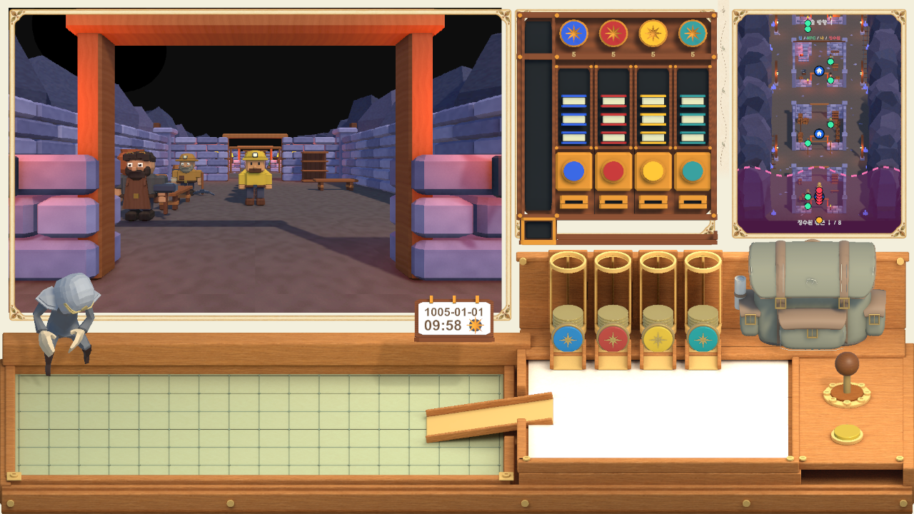
갱도와 기존 네 장소를 연결한 플레이 화면. 달력은 표시 위치, 자판기는 코인통 위에 배치했습니다.
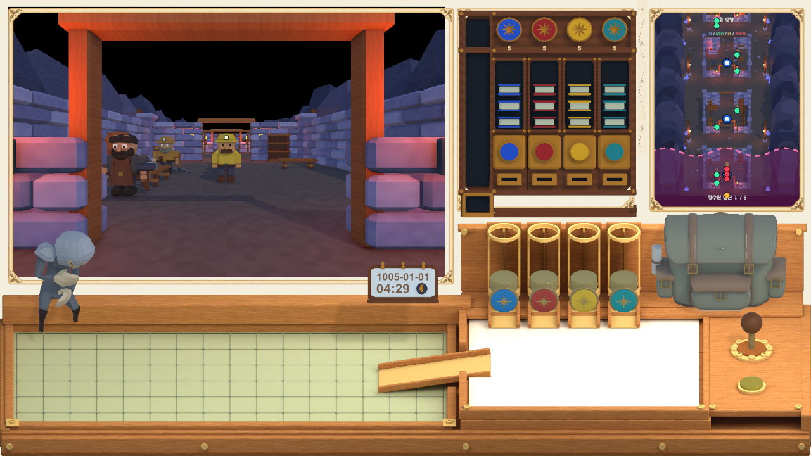
밤의 달 표시와 다음 날까지 남은 시간.
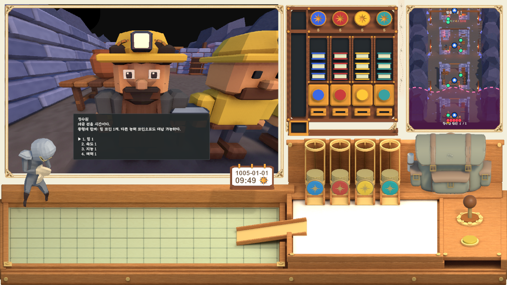
플레이어 조우 시 우선 표시되는 통행세와 대납 선택지.
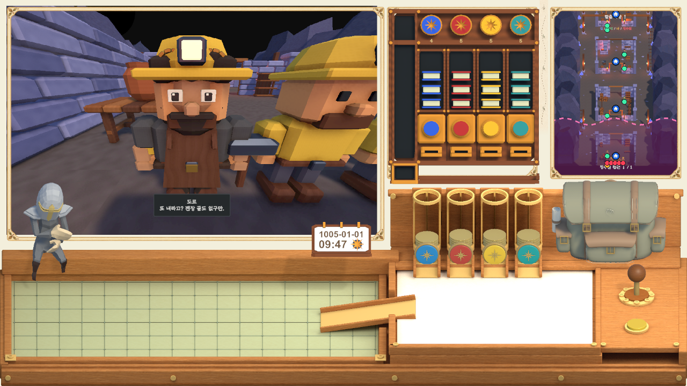
플레이어 납부 후 가까운 NPC의 반응. 검증용으로 두 위치를 붙여 재현한 장면입니다.
임시 씬 적용·검증 도구 tmp/ApplyOpenMineAndCalendar.cs, tmp/OpenMineReview.cs와 격리 저장 MenuSave-20261108-183257, MenuSave-20261108-183727, MenuSave-20261108-184018는 결과 확인 후 정리 대기입니다. 실제 회차는 검증에 사용하지 않았습니다.
2026-11-08 하단 대화창, 기어, 징수 대사, 검 잡기
첫 번째 이미지의 오른쪽 시안을 기준으로 플레이 화면 안 NPC 아래쪽에 공통 패널을 배치했습니다. 기존 챕터·엑셀 작업 기록은 아래에 이어집니다.
단계
상태
변경 내용·확인 방법
일반 대화와 선택지
O
FloatingDialogueView의 기존 uGUI 패널을 재사용합니다. 대사만 있을 때 발화자와 문장을 가운데 정렬합니다. 선택지가 열리면 현재 발화와 번호가 붙은 선택지를 한 상자에 배치합니다. 선택지는 왼쪽 정렬, 선택 줄에는 ▶ 표시를 사용합니다. 배경 너비와 높이는 글 길이에 맞게 계산합니다.
기어
O
JourneyBoardInput이 선택 모드에서 위·아래만 읽습니다. 선택은 1번에서 시작하고 첫 줄과 끝 줄에서 멈춥니다. 한 번 밀면 한 줄, 기어를 중앙으로 되돌리거나 놓아야 다시 이동합니다. 노란 버튼으로 확정합니다.
장소 대화 종료
O
이전 상단 창의 ‘다시 말 걸기’와 ‘다음 장소로 이동’을 같은 하단 패널과 기어 조작으로 연결했습니다.
징수 대사
O
플레이어 조우 시 “세금 걷을 시간이다.”와 현재 요구 코인 종류·액수·대납 선택을 함께 표시합니다. 징수원이 NPC 앞에서 멈춘 동안 플레이어와 조우하면, 가장 가까운 장소 NPC에게 징수하는 대사와 NPC 반응을 먼저 한 줄씩 보여 줍니다. 납부 후 중단된 NPC 선택으로 돌아갑니다.
검 손잡이 클릭
O
DuelMouseHandController의 SwordSelection이 검 메시 범위를 사용해 가드·손잡이·끝 장식도 클릭할 수 있게 합니다. 결투의 칼날 접촉 판정은 별도입니다.
징수 후속 규칙
X
복수 세목의 합산, NPC의 실제 자원 차감과 세금 주기 변경은 후속 항목입니다.
Inspector에서 수정하는 위치
대상
설정
DecisionScene → FloatingDialogue
Floating Dialogue View의 Panel Anchor 기본 (0.5, 0.08), Font Size 15, Background, Border Color, Text Color, Choice Minimum Width Fraction 0.5, Choice Width Fraction 0.65. 위치는 플레이 화면 기준 비율입니다.
DecisionScene → JourneyBoardInput 컴포넌트 검색
Choice Step Pixels 기본 14픽셀. 중앙 재입력 범위는 이 값의 35%입니다.
DecisionScene → DuelMiniGame
검 클릭 상자는 DuelMouseHandController가 결투 입장 후 Hand → Sword → SwordSelection에 생성합니다. 검 모델 크기를 따라갑니다.
임시 검사 도구 tmp/EncounterPanelReview.cs와 격리 회차 MenuSave-20261108-165734, MenuSave-20261108-170142는 결과 확인 후 정리 대기입니다.
검증 결과와 게임 화면
Unity 컴파일 오류 0. 메인 메뉴 시작 버튼으로 격리 회차에 진입했습니다. 브룩의 대사 단독 가운데 정렬, 발화와 4개 선택지의 동시 표시, 수평 이동 무시, 아래 입력 유지 시 한 줄, 중앙 복귀 후 재입력, 위 한 줄 복귀를 확인했습니다. NPC 징수 일시 정지 상태를 검사 도구로 만든 뒤 두 대사와 플레이어 납부 문구·금액을 확인했습니다. 납부 뒤 중단된 2번 선택을 복원했고 장소 종료 선택지 두 개도 같은 패널에서 확인했습니다.
결투 입장 후 실제 검 모델의 끝 장식·손잡이·가드에 각각 화면 좌표로 레이를 쏴 새 클릭 상자가 맞는 것을 확인했습니다. 해당 충돌체의 Unity OnMouseDown 메시지가 손을 잡는 것도 확인했습니다. 물리 마우스 클릭과 전체 결투 수동 플레이는 미검증입니다. 기존 플레이 저장은 검사에 사용하지 않았습니다.
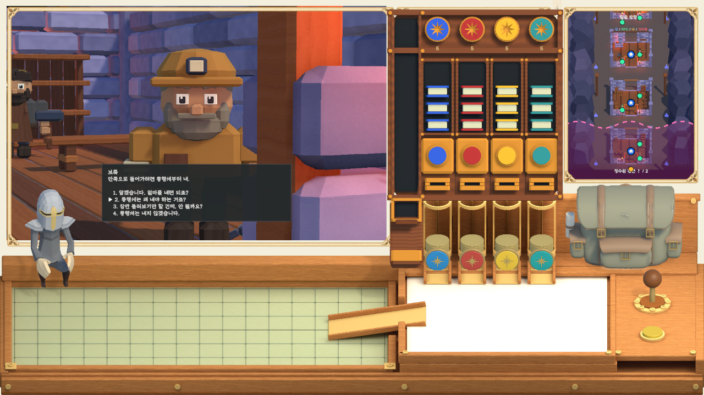
브룩의 대사와 4개 선택지. 기어를 한 칸 이동한 뒤 2번이 선택된 상태.
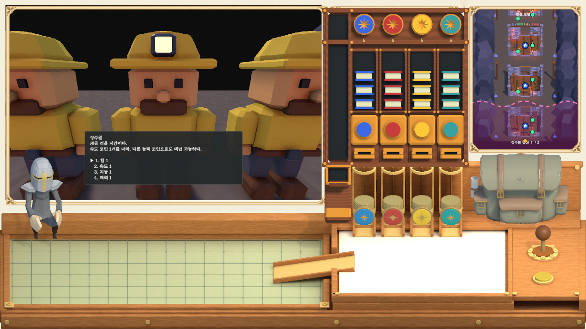
징수원 대사와 납부 선택이 같은 패널에 표시됩니다.
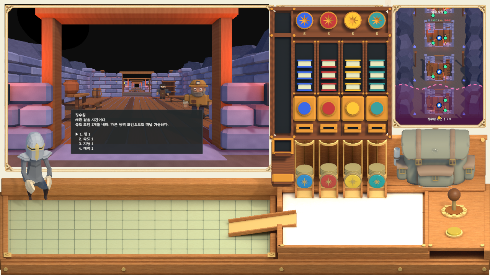
장소 대화 종료 후 다시 말 걸기와 다음 장소로 이동.
2026-11-08 챕터 모듈과 엑셀 적용
기본 경로는 50×180 갱도 청크 3개 → 50유닛 보스 청크 → 3D 전투 스테이지 1 → 승리 후 해안 50×120입니다. 해안 맵은 Chapter_Coast에 따로 등록했습니다. 해안에는 제공된 맵만 배치되어 있으며 이야기와 NPC 추가가 남아 있습니다.
작업
O/X
적용·검증 내용
엑셀 적용과 복구
O
기본 xlsx 10개에서 JSON 문서 13개와 이야기 102개를 읽습니다. 정상 검증 뒤 AppliedContent.json을 교체합니다. 깨진 Books.xlsx로 이전 정상본이 복구되는 것을 검증했습니다. 파일·시트·행 형식 오류와 누락된 이야기·분기 ID를 검사합니다.
실제 Saves 편집 파일
O
C:/Users/유영선/AppData/LocalLow/DefaultCompany/OneWayInVc/Saves/ContentAuthoring/에 초기 파일을 생성했습니다. 게임을 완전히 다시 실행하면 편집값이 반영됩니다. 격리 검증에서 속도 책 보상 2→7 편집값을 실제 학습 작업에 적용했습니다.
챕터 순서와 보스 결과
O
Chapters.xlsx의 챕터 순서·에피소드·bossStage로 진행합니다. 보스 승리 시 다음 챕터 ID와 진입 좌표를 같은 회차에 저장합니다. 패배 또는 마지막 챕터는 기존 회차 종료 흐름을 사용합니다. 해안 연결과 메뉴 재진입을 실제 씬에서 확인했습니다.
180유닛 시험 청크 3개
O
기존 마을의 건물·NPC 위치를 유지하고 환경 메시만 Z 방향 1.5배로 늘린 마을 1개와 통로 2개를 사용합니다. 갱도 끝 Z=540, 보스 청크 끝과 해안 시작 Z=590을 검증했습니다.
시설 자리 계획
O
회차 Seed를 사용해 시설 예정 위치를 계산합니다. 상점은 첫 청크 첫 위치와 마지막 청크를 확보하고, 반복 간격 1~3청크를 사용합니다. 갱도 특화 시설은 유형별 한 번, 같은 청크의 시험 최소 간격은 12유닛입니다. 청크 생성 때 Console에 위치를 기록합니다.
상점·금고·휴식처 등 실제 시설
X
예정 위치는 O. 상점 거래·재고, 시설 오브젝트와 NPC, 지도 표지와 다음 상점 거리, 일반 장소 요구사항과 특수 장소 미니게임의 유형별 연결이 남아 있습니다.
v3 자판기 배치
O
제공 프리팹의 네 버튼과 네 황동 투입구 사용. 본체 하단 뷰포트 Y=0.4918, 코인통 상단 Y=0.4838로 측정. 기존 버튼 입력과 v3 책 배출·흰 보드 드롭을 실제 게임에서 확인했습니다.
책과 학습 기본 흐름
O
책 ID·이름·읽기 요구 지능·비용·시간·보상과 대기 용량을 엑셀에서 읽습니다. 새 책은 배출구에서 기다리고 보드 위에 놓을 때부터 학습합니다. 책 이름 호버, 머리 위 게이지, 책 ID·보드 좌표 저장을 확인했습니다.
학습 추가 규칙
X
투입구 리필 기능과 당일 증가 비용, 책 생성 시간 분리, 학습 실패 확률과 콤보, 지능 구간별 최종 용량·일일 학습량·능력 감소, 가방 보관과 읽기 전용 애니메이션이 남아 있습니다. 현재 시험값은 비용 1, 보상 2, 책별 학습 5초, 배출 0.6초, 동시 1·대기 5입니다.
낮밤·징수원 기본 이동
O
낮 270초, 해 질 무렵 30초, 밤 270초, 해 뜰 무렵 30초. EmacEArt 기반 갱도 회색 하늘과 조명 변화 적용. 징수 이동은 낮 기준 속도에서 해 질 때 감속, 밤 정지, 해 뜰 때 가속합니다. 준비 이동 속도 기준 25초이며 실제 정렬·대기 시간은 별도입니다. 최종 검증에서 NPC 지점의 대기 2.13초가 2~4초 범위에 드는 것을 확인했습니다.
징수 최종 흐름
X
여러 세목의 합산, 보스 처치 수별 일 단위 주기와 강도, 후속 청크 경로, NPC·플레이어 징수 전용 대사 및 별도 구도는 미완료입니다.
대사·선택지와 카메라
O
글자 15와 반투명 검회색 박스, 현재 지원하는 2~4개 선택지 번호 목록, 선택된 줄 표시. 기어를 놓으면 외형이 중앙으로 복귀하고 확정할 선택은 유지됩니다. NPC 카메라 회전과 FOV 보간을 적용했습니다.
추가 화면·해안 수면
X
화면 밖 선택지 화살표·4개 초과 탐색과 징수원·NPC 겹침 회피 구도는 미작업입니다. AQUIS는 제공 후 해안 수면에 적용할 예정입니다.
엑셀과 수정 위치
파일
관리 범위
Chapters.xlsx
챕터 순서, 시작·종료 범위, 에피소드 ID, 적용 규칙과 보스 스테이지.
Maps.xlsx
에피소드별 지형 ID, 청크 개수와 길이.
Places.xlsx
장소 정의·위치, 스폰 후보, 시설 예정 위치 규칙.
NPCs.xlsx
인물 ID, 이름·역할·공개 및 숨은 설정.
Story.xlsx
이야기 등록 ID, 대사 원문, 의미와 생성 설명.
Choices.xlsx
선택지 문구, 연결 분기, 지불액·성공·실패 효과.
Rules.xlsx
하루 시간·밝기, 노동·휴식·경주 등 챕터 규칙.
Taxes.xlsx
징수액·대납, 준비 이동과 NPC 대기 시간.
Books.xlsx
책 ID·이름·능력·지능 조건·비용·시간·보상.
Learning.xlsx
학습·대기 용량, 랜덤 시간 범위와 배출 시간.
Data 시트의 노란 Value 열을 편집합니다. 구조 키는 Document·Field·Type이며 #0부터 배열 인덱스가 연속됩니다. 원본 프리팹은 Unity의 EnvController → Ground Entries에 먼저 등록해야 합니다. 엑셀에서 새 지형을 참조할 때는 등록된 ID를 입력합니다. 회차·기록 파일과 편집 원본은 Saves 아래에서 분리합니다. 프리팹·씬·재질과 자동 저장되는 회차 상태는 기존 형식을 사용하며, 아래 엑셀은 콘텐츠 편집용입니다.
Unity 설정
수정 위치
자판기 배치
DecisionScene → LearningDispenser → Transform. Model 아래 PressButton·CoinSlot, Learning Dispenser View → Overlay Anchors·Outlet Path·Book Board.
하늘과 조명
DecisionScene → DecisionManager → Chapter Skybox(MineGraySky)·Chapter Sun(Directional Light). 시간과 밝기 수치는 Rules.xlsx.
대사
DecisionScene → FloatingDialogue → Floating Dialogue View → Font Size(15), Background(0.12, 0.13, 0.14, 0.82), Text Color.
학습 표시
LearningDispenser → Learning Dispenser View → Book Hover Label, Student Head, Learning Meter, Learning Fill. Seated Player의 LearningMeterAnchor에서 머리 위 위치를 조정합니다.
검증 방법과 결과
Unity 메인 메뉴에서 새 격리 회차를 시작했습니다. 실제 보스와 해안 전환 검증에서는 테스트 도우미로 에피소드 끝에 이동하고 전투 씬의 보스 처치 기능을 호출했습니다. 3청크를 손으로 완주하거나 전투를 수동 플레이한 검증과 구분합니다. 최종 기본 데이터의 해안 체크포인트는 Chapter_Coast, Z=590입니다. 이전 검증용 설정에서도 메뉴 재진입으로 해안이 복원됐습니다. 기존 실제 회차는 검증용으로 사용하지 않았습니다.
책은 배출구에서 20초를 진행시켜도 남은 시간이 유지됐고, 보드 배치 뒤 게이지가 감소했습니다. 보드 좌표와 책 ID는 배치 직후 디스크 저장을 다시 읽어 확인했습니다. 실제 학습 종료 후 속도 잔액은 4→6으로 증가했습니다. 최종 컴파일 오류 0. 마지막 콘솔에는 구버전 Unity Pipeline의 CLI 명령 이름 불일치 오류 1건과 경고 1건이 표시됐습니다. 해당 CLI 호출은 이 버전에서 지원하는 명령으로 다시 실행했습니다. 격리 Play 모드를 종료하고 기본 저장 경로와 Play 설정을 복원했습니다.
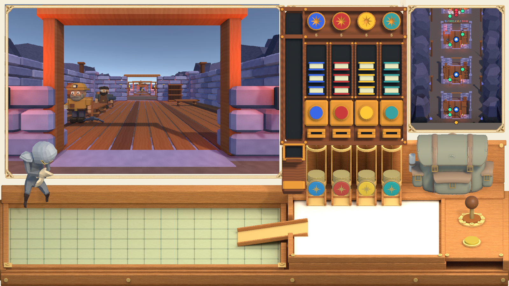
v3 모델과 네 코인통.
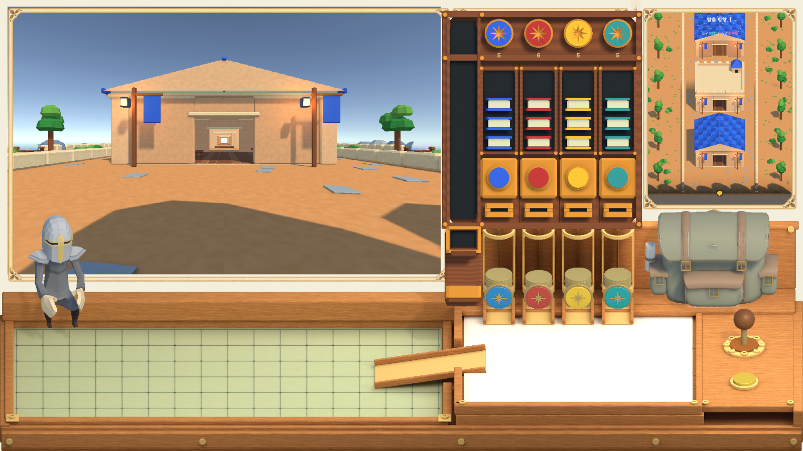
기본 3청크 경로의 보스 승리 후 해안 진입.
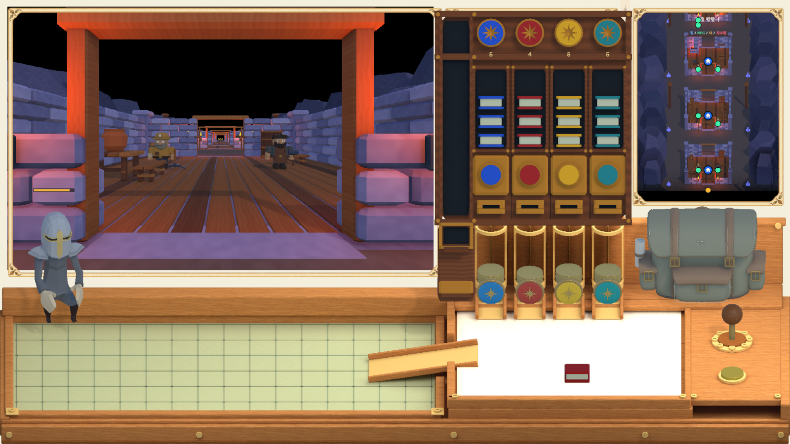
밤의 갱도에서 보드 위 책 학습.
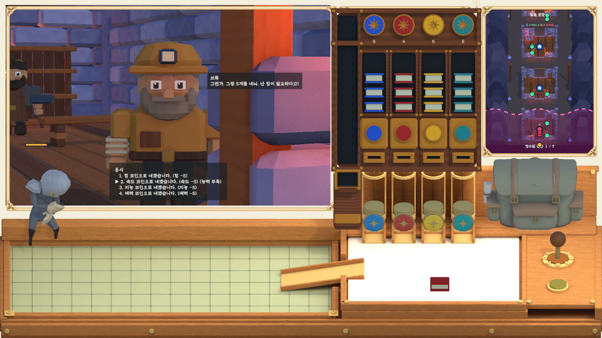
브룩 대사와 네 선택지를 번호 순서로 표시.
실행에 필요한 엑셀 원본은 Assets/StreamingAssets/ContentAuthoring, 재현 도구는 AgentScripts/StoryWorkbook/build-authoring.mjs에 유지합니다. 임시 도우미 tmp/ConfigureDispenserV3.cs, tmp/ApplyChapterPresentation.cs, tmp/ConfigureMineTrialTerrain.cs, tmp/ContentModuleReview.cs는 씬 적용·격리 검증용이며 Git 제외 상태로 결과 확인 후 정리 대기입니다. 검증 저장 AuthoringQA, AuthoringValidationQA, MenuSave-20261108-014938, MenuSave-20261108-015437, MenuSave-20261108-020019(재컴파일 중 초기화 실패), MenuSave-20261108-020321(재검증 통과)도 이 보고서 폴더에 별도 보관합니다.
이 페이지에서 작업 현황·수정 위치·남은 작업을 함께 확인합니다.
아래는 청크 1의 네 장소와 보스 준비 청크를 작업했던 이전 기록입니다. 조우 UI·손 배치와 제공된 3D 학습 자판기 연결까지 반영했습니다. O는 해당 범위 구현 완료, X는 미작업 또는 최종 수치 미확정입니다. 시험값은 별도로 표시합니다.
게임 실행은 Assets/Scenes/MainMenuScene.unity → Play → 시작 버튼. 콘텐츠 등록·수식·상세 절차는 같은 폴더의 사용 설명서에서 확인할 수 있습니다.
최신 수정 — 코인 지불액 절반·홀수 올림
2026-11-06 사용자 요청. 지불액은 ceil(기존 금액 ÷ 2). 1은 1, 0은 0입니다. 각 경로의 원래 금액을 따로 절반으로 줄였으며 경로별 차이는 유지했습니다.
작업 계획·항목
O/X
결과
이야기 지불액
O
Terrain.json의 능력 지불 선택지 60개. 실제 차감·잔액 부족 판정·NPC 수령은 변경된 비용 데이터 사용.
대사·선택 문구·의미 설명
O
Story.json과 Explanation.json의 비용 숫자도 동일한 올림 기준으로 축소. 코인 명칭이 생략된 금액과 ‘동전’ 표기 포함.
징수·대납
O
최종 금액 = ceil((기본 징수량 + 완료 장소 수) × 대납 배율 × 0.5). 곱셈을 마친 뒤 한 번만 올림. 안내와 차감이 같은 함수 사용.
학습비
O
기존 1 → 1. 초기 잔액·학습 보상·활동 보상·피해량은 변경하지 않음.
검증·문서
O
60개 비용 비교, 지불 외 액션 데이터 유지, 대사·선택지·재현 빌더 검사 통과. 메인 메뉴 진입 후 브룩 지불 분기를 도우미로 열어 기존 선택/확인 경로로 속도 5→0 차감 확인. 모든 장소를 다시 수동 완주한 검사는 아님.
이전 → 현재 금액
기존
현재
1
1
4
2
5
3
6
3
7
4
8
4
10
5
12
6
15
8
20
10
징수(완료 장소 0~4개): 지정 코인 [1,2,3,4,5] → [1,1,2,2,3], 다른 코인 [2,4,6,8,10] → [1,2,3,4,5]. 올림 때문에 최종 요구량 비율이 정확히 2배가 아닐 수 있어 대납 안내는 선택지의 실제 금액을 표시합니다.
다시 수정할 곳
이야기: Assets/Decision_YYS/Resources/Chapters/Chapter_01/Terrain.json → actions → choiceRules → abilityCost. 실제 금액을 직접 입력하며 이미 절반 적용된 값입니다. 여기에 다시 자동 반값을 곱하지 않습니다. 문구는 같은 챕터의 Chapter_01_01/FirstMeetings/Story.json, 의미 설명은 Explanation.json에서 함께 수정합니다.
징수: Assets/Decision_YYS/Resources/Chapters/Chapter_01/Rules.json → taxCostScale=0.5. 기본량 baseTax=1, 대납 배율 alternatePaymentMultiplier=2 유지. 이 값은 Inspector 컴포넌트가 아닌 JSON 설정입니다. 학습비 Inspector는 DecisionScene → _UI/Decision_Canvas/Decision_UI_Root/LearningStation → Mine Learning Station → Costs=[1,1,1,1]입니다.
재현 도구 AgentScripts/BuildMineChapter.py에도 승인된 수치 변환을 반영했습니다. 이미 수정한 출력 JSON에 재차 변환하는 것이 아니라 원문에서 생성할 때 한 번 적용합니다. 이번 작업에서 새 임시 코드는 만들지 않았습니다. 격리 검증 저장 output/MineChapterReview/MenuSave-20261106-005045, output/MineChapterReview/MenuSave-20261106-005357는 결과 확인 후 정리 대기입니다. 기존 임시 코드 대기 상태는 아래 기록을 유지합니다.
모델의 PressButton, BalanceAnchor, StatusAnchor, TimerAnchor 위치를 수정. 표시 UI는 LearningDispenserOverlay 아래. RectTransform 위치는 앵커 추종으로 매 프레임 갱신됨. 글자 크기는 해당 TMP의 Font Size 수정.
Capacities: 지식 0부터 동시 1·대기 5. Costs=각 1, Rewards=각 2(시험값). Minimum/Maximum Seconds=5, Random Duration=꺼짐, Delivery Seconds=0.6. 통로 연출도 이 시간을 공유.
코드와 검증 범위
MineLearningStation이 기존 경제·FIFO·저장을 담당하고 LearningDispenserView는 실제 작업을 3D로 표시합니다. 기존 평면 책 표시는 Show Flat Books=꺼짐. 새 학습 시스템이나 별도 재화를 만들지 않았습니다. AssetBuild/LearningDispenser/BuildLearningDispenser.cs는 에셋 재현 도구로 유지하며 새 AiAsset 경로를 사용합니다.
분리된 검증 저장으로 실행. 초기 잔액 [5,5,5,5] → 6개 등록 [4,3,3,4] → 속도 학습 완료 [4,5,3,4]. 다음 지능 학습·대기 4개와 표시 일치. 정지 검사는 Station.Tick의 stop 인자 경로로 확인했으며, 이번에 모든 미니게임을 다시 완주한 검사는 아닙니다. 최종 Console 오류 0, 기존 경고 1. 정상 저장·Play 설정 복원.
시작 상태: 왼쪽 큐는 비어 있고, 모델은 기존 공급통 위에 정렬됩니다.등록 후: 실제 대기 5개만 쌓이고 첫 학습 책이 왼쪽 아래로 배출됩니다.
임시 작업 코드: AgentScripts/ConnectLearningDispenser.cs — 씬 연결·검증용, Git 제외, 2026-11-07 삭제 완료. 실행에 필요한 LearningDispenserView와 에셋 재현 도구는 유지합니다. 분리 검증 저장 2개(MenuSave-20261105-013747, MenuSave-20261105-014450)도 2026-11-07 삭제 완료.
이전 작업: NPC 손 배치·용사 이름
최신 수정 — 사용자 NPC 손 배치·용사 이름
2026-11-04. Play 모드의 DuelNpcHand 배치를 읽어 NPC 기준점에 적용했습니다. 플레이어 손 설정은 유지했습니다.
계획·항목
O/X
결과
사용자 Play 배치 기록
O
NPC Position=(-3.37,-5.69,1.546619). 이동·공격 기준점에 이 위치와 기록한 회전 적용. npc-hand-user-pose.json 보존.
플레이어 손 유지
O
조작 Z=-0.78, Held Forward Offset=0.9782 유지. 최초 검 배치·크기·입력 감도 유지.
NPC 조정 후 입력 방어 검사
O
Input System 합성 마우스로 검 클릭·마우스 이동·우클릭 가드 유지. 일반 Update·Animator·실제 칼날 접촉에서 방어 성공. NPC 루트 Z≈1.546619, 플레이어 루트 Z≈-0.78.
선택지 이름·방향
O
선택 중·확정 후 플레이어 발화 이름을 “용사”로 표시. 좌상·좌하·우상·우하 등의 방향 문구 생략. 기어의 선택 매핑과 노란 진행 버튼 입력은 유지.
전투 전체·모든 타이밍형 패링
X / 이번 미검증
이번 확인은 베기/가드 입력 흐름. 모든 공격과 승패를 사람이 수동 완주한 검증은 아님.
Inspector: DecisionScene → _Systems / DuelMiniGame → Npc Duel State Machine → Vertical Attack Pose의 연결 오브젝트 NpcVerticalAttackPose. 이동 깊이는 Duel Authoring References → Npc Hand Patrol Pose의 연결 오브젝트. 두 NPC 기준점의 Position=(-3.37,-5.69,1.546619). 플레이어는 Duel Mouse Hand Controller → Held Forward Offset=0.9782.
손 리그와 애니메이션의 로컬 칼날 오프셋이 달라 두 손 루트의 Z가 달라도 실제 칼날은 접촉할 수 있습니다. 현재 검증한 배치를 기준으로 조절하며 루트 Z만 강제로 같게 맞추지 마세요.
검증: 선택지에 용사 표시·방향 생략, 배경 자동 크기·하단 위치 유지, NPC 새 위치에서 입력 방어 성공. 컴파일·Console 오류 0. 기존 groundPrefab 경고 1개 유지. 새 에셋 없음.
선택지에는 용사와 문장만 표시. 위치·문장별 배경 크기는 유지합니다.사용자가 옮긴 NPC 손 배치로 입력 방어를 확인한 시점입니다.
검사는 별도 저장과 임시 합성 마우스로 수행했고 원래 입력 설정을 복원했습니다. 임시 도우미 AgentScripts/UIEncounterRevision.cs는 2026-11-04 사용자 요청으로 삭제 완료했습니다.
이전 단계: 플레이어 깊이·선택지 배경 검사
최신 수정 — 선택지 자동 크기·하단 배치·손 깊이
2026-11-04. 사용자가 Play 모드에서 조정한 DuelPlayerHand의 Z=-0.78을 기록해 적용했습니다. 이전 접촉 검사는 손 위치를 직접 정렬한 검사였으며, 이번에는 마우스 입력 경로를 추가 검증했습니다.
단계·항목
O/X
수정·확인 내용
실행값 조사·보존
O
플레이어 손 (-3.766666,-5.95,-0.78) 기록. X/Y는 마우스로 이동하는 값, Z를 조작 기준에 저장.
선택지 배경 자동 크기
O
현재 줄바꿈된 Rect 너비 대신 제한 없는 문장 너비를 먼저 측정. 화면 너비 × Choice Width Fraction까지 가로 확대, 초과 시 줄바꿈·세로 확대. 좌우 여백 각 12로 측정·실제 글자 영역을 일치.
표시한 하단 중앙 배치
O
Player Area Anchor Min=Max=(0.5,0.12), Pivot=(0.5,0.5), Anchored Position=(0,0). 별도 확인 버튼 없음. 기어 선택·노란 버튼 확정 유지.
플레이어 손 깊이 되돌림
O
Held Forward Offset=0.9782 → 기사 Z(-1.7582)+0.9782=-0.78. 이전 1.035282 조작 평면에서 사용자 지정 깊이로 변경.
NPC 공격 접근
O
NpcVerticalAttackPose=(-3.37,-5.69,-0.78). 이동 중 NpcHandPatrolPose는 Z=1.035282 유지하고 공격 준비 때 플레이어 쪽 깊이로 접근. 기존 애니메이션·공격 간격·충돌 규칙 유지.
일반 마우스 입력 경로의 방어
O
Input System 합성 마우스 장치로 실제 클릭 → 검 잡기 → delta 이동 → 우클릭 가드 유지. 일반 Update·Animator·실제 칼날 접촉에서 AttackBlocked=true. 손 Transform 직접 배치·공격 시점 강제 샘플링 없이 통과.
모든 공격·타이밍형 쳐내기·승패 완주
X / 이번 미검증
이번 입력 검사는 베기/가드 한 흐름의 방어 성공까지. 모든 패턴의 수동 플레이 완주를 뜻하지 않음.
선택지 크기 검사: 짧은 문장 너비 120 / 안내 문장 190.6 / 긴 문장 최대 673.4에서 줄바꿈·높이 86.01. 세 경우 모두 글자가 배경 안에 들어오는 것을 확인했습니다. 최종 컴파일 오류 0·Console 오류 0, 기존 groundPrefab 경고 1개 유지.
입력 검사는 별도 저장·임시 합성 마우스로 수행했습니다. 에디터 포커스에 막히지 않도록 입력 설정을 메모리 복제했으며 검사 후 원본 설정·장치를 복원했습니다. 물리 마우스를 사람이 조작해 완주한 검사와 구분합니다. 새 에셋 없음. 임시 도우미는 기존 AgentScripts/UIEncounterRevision.cs를 이어 사용했고 삭제 완료 상태입니다.
표시한 하단 중앙으로 이동. 안내 문장은 불필요하게 마지막 글자만 줄바꿈하지 않으며 배경이 문장 길이에 맞춰 늘어납니다.플레이어 손 Z=-0.78에서 일반 입력 경로로 방어 성공한 시점. NPC는 공격할 때 해당 깊이로 접근합니다.이전 단계: 중앙 선택·기존 깊이 접촉 검사 기록
2026-11-04 최신: 대사 영역·중앙 선택·결투 접촉
계획·작업
O/X
적용·확인
실행 중 사용자 NPC 손 위치 기록
O
DuelNpcHand=(-3.37,-5.69,1.035282), 회전=(7.965,92.381,273.146). 위치·회전 JSON 기록 후 기준점에 저장.
대사 영역 이동
O
플레이 화면 오른쪽, 왼쪽 맞춤. NPC Area 앵커 Min=(0.62,0.58), Max=(0.92,0.97). Message Gap=12. 폰트 12·문장별 배경·상승·페이드 유지.
선택지 중앙·확인 버튼 제거
O
Player Area 앵커와 Pivot=(0.5,0.5), Position=(0,0). 배경이 문장 길이로 변해도 중앙 유지. 별도 확인 버튼은 비활성화. 기어 선택 → 기존 노란 진행 버튼 확정.
NPC 이동·공격 기준점 수정
O
NpcHandPatrolPose와 NpcVerticalAttackPose에 사용자 NPC 손 배치 적용. 기존 이동 곡선·공격 애니메이션·판정 규칙 유지. 손을 잡은 후 실제 위치 변화 확인.
양쪽 칼날의 깊이 일치
O
기존 공격 기준점 Z=-1.65와 플레이어 조작 평면이 달랐던 부분 수정. 공격/이동 기준점 Z=1.035282. Held Forward Offset=2.793483 → 기사 Z(-1.7582)+오프셋=1.035282.
실제 칼날 방어 접촉
O
원래 Slash·Guard 애니메이션 사용. 설정된 깊이를 유지하며 플레이어 손 X/Y만 조정해 실제 칼날 BoxCollider 접촉 검사. CheckDefenseContact에서 AttackBlocked=true, 방어 성공·접점 효과 확인. 충돌 크기·피해·판정 코드는 변경하지 않음.
선택 비용 글자 표시
O
현재 폰트에 없는 수학 마이너스 대신 일반 하이픈(-)을 표시해 네모 글자 경고 방지.
전투 전체 승패·찌르기 쳐내기 전체 검증
X / 이번 미검증
이번 검사는 이동·베기/가드의 실제 3D 접촉을 대상으로 함. 모든 패턴·타이밍·승패를 수동 플레이로 완주한 의미는 아님.
핵심 코드 변경: FloatingDialogueView의 대사 왼쪽 정렬·간격·확인 버튼 숨김·가운데 선택 표시, DecisionManager.Encounters의 비용 문자. 결투 수정은 기존 씬 기준점과 Inspector 값에 적용했습니다. 새 에셋 없음.
최종 컴파일 오류 0·Console 오류 0. 기존 groundPrefab 미지정 경고 1개 유지. 검증은 메인 메뉴 시작·별도 저장으로 수행. 접촉 검사는 원본 애니메이션 시점을 샘플링하고, 설정 깊이에서 X/Y만 조절한 개발용 검사입니다. 사용자의 기존 저장에는 적용하지 않았습니다.
오른쪽 대사 영역, 플레이 화면 중앙의 선택 문장. 별도 확인 버튼 없음.사용자 배치에 맞춘 NPC 공격과 플레이어 가드의 실제 접점 효과. 검사 시점의 화면입니다.
작업 현황
O는 명시된 기능까지 적용, X는 미작업·후속 범위입니다.
항목
O/X
현재 내용·남은 부분
NPC 대사·플레이어 선택 UI
O
화면 안의 불투명 박스·폰트 12. 문장별 배경 너비·높이, 기본 유지 6초·페이드 1.2초. 이전 대사는 위로 이동·소멸. 대사는 지정한 오른쪽 영역에서 왼쪽 정렬. 선택은 표시한 하단 중앙, 문장 길이에 따른 가로·세로 자동 크기, 별도 확인 버튼 없음. 기어·노란 진행 버튼 연결.
학습 자판기·대기열·저장
O
초기 동시 1 / 대기 5 / 5초. FIFO 배출, 비용 1·완료 2 시험값. 이동·대화 중 진행, 요구·미니게임 중 정지 후 재개.
지식별 학습·대기 용량 / 랜덤 시간
O
인스펙터 단계표·시간 범위로 조절. 추가 지식 구간 수치는 미정(X).
지도 위치·징수 접근 표시
O
건물·NPC·플레이어·징수원 마크, 실제 좌표 투영, 분홍 경고 영역·거리·방향.
앉은 플레이어
O
사용자 실행 중 위치·회전·Scale 0.5 저장. X Bot@Sitting Idle 반복. 전용 Avatar 기준 자세를 T 자세로 보정해 양손이 무릎 앞으로 향함. 결투 생성 시 숨김, 정리 후 복원.
메인 메뉴 시작
O
MainMenuScene → 기존 시작 버튼 → DecisionScene.
갱도 청크·네 장소
O
MineChunkModularPack, 길이 120. 브룩·도르 / 모아·피코 / 틸·벨라 / 네아·시아.
이야기·선택·비용 데이터
O
102개 이야기 노드, 발화 카드 332개, 유료 선택 60개 경로. Story / Explanation / Terrain 행동 규칙을 조합.
고정 대사·첫 만남
O
도르 “켄타우로스라고? 진짜 다리가 네 개라고?” 반영. 소문과 네아·시아의 첫 만남은 고정.
플레이어가 문을 거쳐 실제 이동. MineNPCPlacement의 장소별 후보 5개 중 선택. 같은 회차 Seed로 위치 복원.
카메라
O
NPC 중앙 정렬·결투 전신 표시·대화 후 +Z 정면 복귀. 1인칭 카메라에서 자기 몸과 검 제외.
보드 기사·검·손
O
기사 크기 0.5. 양쪽 손 시작점 Z=-0.9582, 기사 Z보다 0.8 앞. 잡은 뒤 깊이는 기사 위치 + Held Forward Offset(0.9782) = -0.78. NPC 이동·공격 기준점은 사용자 배치 Z=1.546619. 실제 칼날 접촉으로 방어 확인. 검 클릭 시 양손 표시·기존 조작 연결.
지불·부족 분기·저장
O
능력 차감·NPC 수령 기록·중복 방지. 부족한 지불 시도는 잠금 대신 이야기·결투로 진행.
노동·경주·동전·피로
O
대기·능력 증감·승패·강제 휴식과 기존 보드 연결. 수치는 사용 설명서에 기록.
징수원 이동·대형·징수
O
임시 3~5명. 초기 4→3→2→1, 이후 1→2→3→4. 바깥 가로 이동, 문 앞 일렬, 출구 가로 정렬 후 3초 대기. 조우 후 전진. 징수 대사·선택은 일반 NPC UI와 동일.
징수 후 퇴장·재등장
O / 시험값
청크 끝에서 숨김 → 5초 후 끝에서 4→3→2→1 입장 재시작. 대기 상태 저장. 숨은 동안 지도 마크·접근 경고 없음.
최종 징수원 재등장 주기
X
추후 확정. 현재 Return Delay Seconds=5초 시험값.
보스 청크·지도 표시
O
BossRevealMapPack 사전 로딩. 마지막 장소에서 지형·Boss1 표시. 지도 전방 오프셋 10, Orthographic Size 24.
Boss1 대기·포효
O
중앙 배치, 균일 Scale 약 7.37. 기존 Idle 11.3초 / Sword_Shout 6.2초 반복, 발 높이 보정.
일반 NPC·징수원 애니메이션
X
외형은 연결했으나 리그·대기·걷기·대화 클립 미연결. 징수원 애니메이션은 사용자 지시로 보류.
노동·휴식·경주·NPC별 결투 연출
X
전용 동작·리그 연결 필요. 경주는 게이지, 결투 보드는 공통 기사·손 표현 사용.
카르덴 전투·징수 실전 강화
X
현재 Boss1은 미리보기. 보스전·패턴·강화 적용은 후속 범위.
전용 성장 미니게임·나이·능력 유지·NPC 성장
X
시간형 학습과 이동 병행은 적용. 별도 성장 미니게임, 나이·유지·NPC 성장 반영은 미작업.
신분 통행료·코인 전체 통합
X
신분 가중치는 제안식만 존재. 기존 물리 공급·베팅 전체의 완전 통합 미작업.
갱도 하늘·로컬 AI 품질 검증
X
EmacEArt_sky 미적용. 실제 로컬 모델의 기분별 대사 품질 인증 미실행.
전체 모듈화·콘텐츠 완전 자동 추가
X
현재 JSON·프리팹·인스펙터 연결 방식. 청크 1 전용 조건과 네 장소·두 배우 기준이 남아 있음.
수정 가능한 Inspector 위치
Assets/Scenes/DecisionScene.unity를 열고 Hierarchy에서 아래 오브젝트를 선택하세요. 검색창에 마지막 오브젝트 이름을 입력해도 찾을 수 있습니다. 영구 적용은 Play 종료 → 값 수정 → 씬 저장 순서입니다. Play 중 값 변경은 종료 시 되돌아갑니다.
수정 항목
Hierarchy 경로
컴포넌트·필드
현재 값·방법
앉은 병사 위치·크기
KnightCharacter_Copy_Exam
Transform / Position, Rotation, Scale
Position=(-6.77601, -7.400184, 0.731844), Rotation Y=167.5517, Scale=(0.5,0.5,0.5). 실행 중 사용자 배치를 저장.
앉기 리그·애니메이션
KnightCharacter_Copy_Exam
Animator / Avatar, Controller
SeatedKnightAvatar / SeatedKnight. 원본 X Bot@Sitting Idle의 Sitting Idle 반복. Avatar 기준 자세를 보정했으며 원본 FBX·전투 모델은 유지.
Floating Dialogue View / Npc Area, Player Area → 연결된 RectTransform
Npc Area: Min=(0.62,0.58), Max=(0.92,0.97). Player Area: Anchor Min=Max=(0.5,0.12), Pivot=(0.5,0.5), Position=(0,0). 연결된 RectTransform을 수정. 문장 배경은 실행 중 자동 크기 조절.
재등장 시험값 5초 / 출구 정렬 대기 3초 / 초기 이동 3 / 진행 이동 0.25 / 간격 1.2. Stops=네 장소 입출구. 최종 재등장 주기 X·미정.
플레이어 검 시작점
_Systems / DuelMiniGame / PlayerHandRestPose
Transform / Position, Rotation
현재 (-0.7,-7.51,-0.9582). 손 전체 생성 기준점이므로 검 자식만 옮기지 않기.
NPC 검 시작점
NpcHandRoot
Transform / Position, Rotation
현재 (-5.36,-7.72,-0.9582). 보드 기사 Z=-1.7582보다 +Z 앞쪽 0.8.
손을 잡은 뒤 조작 깊이
_Systems / DuelMiniGame
Duel Mouse Hand Controller / Held Forward Offset
현재 0.9782. 조작 평면 Z = 기사 Z(-1.7582)+이 값=-0.78. 플레이어 설정 유지. NPC 이동·공격 기준점 Z=1.546619. 리그별 칼날 오프셋이 달라 루트 Z를 같게 강제하지 않음.
전투 손 참조·이동 궤적
_Systems / DuelMiniGame
Duel Authoring References / Player Hand Start Pose, Npc Hand Start Pose, Npc Hand Patrol Pose; Npc Duel State Machine / Screen Path, Vertical Attack Pose
최초 검 시작점은 위 참조. Npc Hand Patrol Pose: Position=(-3.37,-5.69,1.546619). Npc Duel State Machine의 Vertical Attack Pose: Position=(-3.37,-5.69,1.546619). 회전은 (7.965,92.381,273.146). 실행 중 손은 복제본이므로 이 기준점을 수정. Screen Path는 이동 곡선 X/Y를 조절.
보드 플레이어
_Systems / DuelMiniGame
Duel Mini Game Bridge / Setup Controller → Tutorial Mini Game Controller / Knight Scale, Knight Spawn Pose
연결된 KnightCharacter_Copy 기준 위치 (-2.95,-7.895,-1.7582), 크기 0.5. 손 위치를 옮겨도 기사 크기는 유지.
2026-11-07 사용자 지정 계획. NPC가 거주하는 일반 건물 외에 상점과 다른 특수 장소를 추가하고 유형에 따라 다른 느낌으로 진행.
장소 유형 데이터·등록·분류와 유형별 진행 연결 구현 필요. 구체적인 장소 목록·맵 배치·필요 에셋은 사용자 지정 후 적용. 상점의 세부 규칙은 미정.
일반 NPC 거주 장소: 요구사항 선택지 중심
X
여러 요구사항에 대한 선택지를 제시하고 플레이어의 선택에 따라 진행하는 방식으로 구성할 계획.
요구사항 목록·조건·선택 결과·비용/보상 정의, 이야기·저장 연결 필요. 기존 일부 선택지 구현과 별개로 장소 유형에 따른 공통 진행 구분은 미작업.
특수 장소: 미니게임 중심
X
특수 장소에서는 미니게임을 진행해 일반 거주 장소의 요구사항 선택 흐름과 다른 경험을 제공할 계획.
장소별 미니게임 종류·진입 조건·규칙·종료/승패 결과와 필요한 에셋 지정, 장소·이야기·저장 연결 필요. 기존 미니게임 존재와 별개로 특수 장소 유형 연결은 미작업.
Obsidian 이야기 설정 관리
X
2026-11-07 사용자 지정 계획. 인물·장소를 링크로 연결해 세계관·NPC 설정·사건 관리.
관리 공간·문서 양식·인물/장소/사건 연결 규칙 구성. 실제 도입·프로젝트 데이터 연결은 미작업.
Google Sheets / Excel 대사 목록 관리
X
대사 ID·조건·결과를 표로 정리하고 전체 대사 목록·진행 현황 관리.
관리 표 양식·ID/조건/결과 열 정의, 기존 데이터 가져오기·내보내기 및 검증 연결 미작업.
Yarn Spinner 대화 구현 관리
X
선택지 분기를 확인하고 Unity 대화 구현에 연결하는 관리 계획.
도입 설정, 기존 이야기·선택지·비용·결과·저장 흐름 연결 및 검증 미작업.
Ink 분기형 이야기 관리
X
조건·변수를 사용하는 복잡한 이야기와 선택 결과 작성·관리 계획.
도입 설정, 변수·조건·결과 데이터 연결, Yarn Spinner와의 역할·적용 범위 정리 및 검증 미작업.
징수원 최종 재등장 주기
X
퇴장·반복 기능 O, 시험값 5초
최종 대기 시간. Inspector Return Delay Seconds에서 변경.
지식별 학습·대기 용량
X
단계표 기능 O, 기본 동시 1·대기 5
지식 코인 임계값별 동시 학습 수와 대기 한도.
학습 최종 비용·보상·시간
X
비용 1·보상 2·시간 5초는 시험값
능력별 최종 비용·보상, 랜덤 시간 범위.
일반 NPC·징수원 애니메이션
X
제공 외형·임시 징수원 배치 O
사용자가 지정한 리그 및 Idle·Walk·Talk 클립. 징수원 동작은 보류 중.
노동·휴식·경주·NPC별 결투 연출
X
공통 규칙·보드·승패 연결 O
사용할 모델·호환 리그·작업/휴식/경주/전투 클립과 연출 지정.
전용 학습 미니게임·일어나서 작업
X
시간형 학습·대기열 O, 앉기 클립 O
미니게임 규칙과 일어나기·작업 애니메이션.
카르덴 전투·징수 강화
X
BossReveal 맵·Boss1 Idle/포효 미리보기 O
최종 보스 외형·공격/피격/사망 클립, 패턴·승패·강화 수치.
나이·능력 유지·NPC 성장
X
시간형 학습과 능력 증감 일부 연결
성장·감소·유지·나이 진행 규칙과 저장 요구.
신분 통행료·코인 전체 통합
X
지불·징수는 능력 잔액 사용
신분 판정·통행료 공식 확정, 기존 물리 공급·베팅 통합 범위.
갱도 하늘·조명
O
EmacEArt 기반 낮밤 회색 하늘과 조명.
밝기와 시간은 Rules.xlsx에서 조정.
새 NPC·장소·챕터 완전 자동 추가
X
JSON·프리팹·Inspector 연결로 현재 콘텐츠 확장
청크 1 전용 조건, 네 장소 경로·두 배우 제한 일반화. 새 콘텐츠 자동 등록 도구는 없음.
로컬 AI 대사 품질 검증
X
고정 첫 만남·데이터 연결 O
실제 모델의 기분별 대사 품질·원문 유지 검증.
핵심 변경 구조
FloatingDialogueView: 폰트·문장 맞춤 배경·시간 기반 페이드·선택 확인 버튼 크기.
DecisionManager.MineChapter / Encounters: 징수 응답을 기존 Presentation·기어·확인 흐름으로 전달하고 종료 시 원래 선택 상태 복원.
MineCollectorProcession: Finished 단계에 저장된 대기 시간을 사용해 재입장. JourneyMapMarkers는 비활성 징수원 마크를 숨김.
DuelMouseHandController: 고정 깊이 대신 기사 위치와 Held Forward Offset 사용. 씬의 양쪽 시작점 이동.
SeatedKnightAvatar.asset / DecisionScene: 전용 Avatar 기준 자세와 사용자 Transform 저장.
결과 화면
가장 최근 자판기 화면은 최신 자판기 연결, 이전 손 배치 화면은 NPC 손 배치에서 확인합니다. 아래는 이전 단계 기록입니다.
최신 대사 화면: 폰트 12·문장별 배경, 학습 자판기·지도·앉은 플레이어. 앉기 리깅과 사용자 지정 크기 0.5를 적용했습니다.징수 대사는 NPC 옆, 응답은 일반 선택 영역에 표시됩니다.검을 잡은 직후 양손·검이 보드 플레이어 앞에 놓인 상태. 앉은 미리보기는 숨김.오래된 대사 페이드·학습 대기열 확인
학습 대기열 이미지는 이전 단계 캡처이며, 대사·앉기·손 배치 최신 상태는 위 화면을 기준으로 합니다.
보스 사전 로딩·지도 표시 검증. 기사·검 최종 배치 변경 전 캡처입니다.검 클릭 후 손 표시
실제 마우스 입력으로 연결 확인. 최종 위치 변경 전 기록입니다.
징수원 가로 이동 → 일렬 통과보스 대기·포효
기존 클립의 자세 확인용 캡처. 런타임에서는 두 상태를 자동 반복합니다.
추가하면 자동으로 늘어나는가?
등록과 연결까지 맞추면 기존 대사·분기 데이터는 늘릴 수 있습니다. 파일이나 모델만 복사해서는 등장하지 않습니다. 새 장소·새 챕터·새 미니게임에는 코드 작업이 필요한 부분이 있습니다.
사용 설명서의 콘텐츠 추가 방법에서 파일별 역할·추가 순서·현재 한계를 확인하세요. 이번에는 문서를 갱신했으며, 확장 제한 코드를 새로 개편하거나 콘텐츠를 임의로 추가하지 않았습니다.
검증 기록
2026-11-04 기능 수정 검증
메인 메뉴 StartButton으로 별도 저장 세션을 시작했습니다. 새 조우 검사 13개: 배치·클립·양손 방향, 퇴장·5초 대기·재입장·저장 상태·폰트 12를 통과했습니다. 징수 기어 선택+확인으로 1회만 차감, 대사 배경 너비 차이와 오래된 대사 alpha 감소·새 대사 alpha=1, 검 클릭 후 손의 앞쪽 배치를 확인했습니다. 징수원 비활성화 시 지도 마크와 접근 경고가 숨는 연결 검사도 통과했습니다. 최종 Unity 컴파일 오류 0·Console 오류 0. 기존 groundPrefab 미지정 경고 1개는 유지됩니다. 전투 전체 승패·전체 네 장소 경로는 이번에 다시 검사하지 않았습니다. 아래 이전 범위 검증 기록과 구분합니다.
콘텐츠·거래 241개 + 배치·징수원 26개 + 학습 17개 = 284개 통과 기록. 메인 메뉴 → 네 장소 → 보스 준비 청크 → 메뉴 복귀, 학습 저장·정지·재개·에피소드 연속성을 확인한 기록입니다. 전체 이동 검증은 능력 각 100의 격리 저장을 사용했습니다. 최신 수정 후 전체 전투·전체 경로를 다시 검사했다는 의미는 아닙니다.